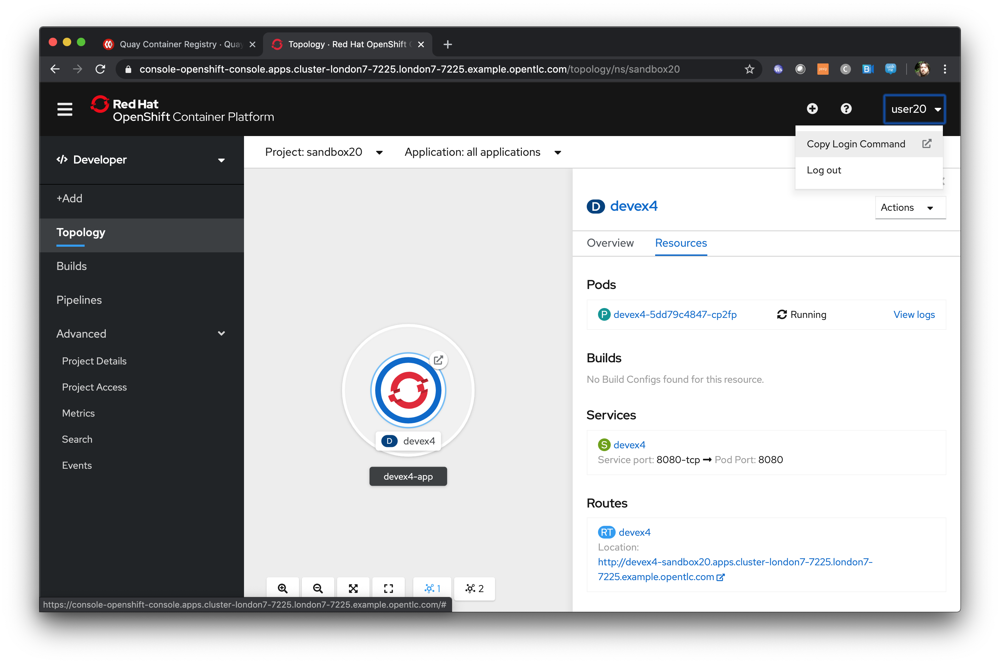

Introduction
Attendee details
Name: |
|
User ID (userX): |
This workshop is designed to introduce Developers to OpenShift 4 and explain the usage and technologies around it from a developer perspective.
What is Openshift
Red Hat® OpenShift® is a hybrid cloud, enterprise, secure Kubernetes application platform.
OpenShift is an Enterprise strength, secure implementation of the Kubernetes container orchestration project with additional tooling designed to make the lives of Developer and Administrators as easy as possible.
Links
-
https://https (the Web Console URL for the Workshop)
Workshop Pre-requisites
Setting up the UI and Terminal
The workshop was designed and tested on the Chrome browser and it is advised to avoid issues that this browser be used whenever possible
| For a number of the labs you will be interacting with the OpenShift cluster using a number of different command line tools. In order to avoid you having to install them on your own machine we have taken advantage of the nature of OpenShift and produced a Container that does it all for you, and provides a terminal experience in the browser. In this section you will create that application; this terminal is used throughout the workshop. |
| If you leave the Terminal window open for a long time without using it it will disconnect. To reconnect simply refresh the page. |
Open the browser and navigate to the console url https://https
Logon using the user provided by the course administrator (user*x* where x is a unique number for your session)
When logged on you will be presented with a screen listing the projects, of which there are currently none
Hit 'Create Project'
For 'Name' enter terminal*x*, where x is the same unique number from your UserID (user*X*)
'Display Name' and 'Description' are optional labels
Once the project has been created (you will be given a dashboard) change the mode of the UI from Administrator to Developer by clicking on the top left of the UI where it says 'Administrator' and selecting 'Developer'
On the Topology page it will state 'No workloads found' - Click on 'Container Image'
In 'Image Name' enter 'quay.io/ilawson/devex4'
Click on the search icon to the right of the text box
Leave everything else as default and scroll down to the bottom of the page. Hit 'Create'
Wait for the ring around the application icon to change to dark blue - this indicates the application has been started
In the topology page click on the 'Open URL' icon as shown below

This will open another tab with a command line in it - this is your terminal for the duration of the basic workshop
Switch back to the UI and click on the userx displayed at the top right and select 'Copy Login Command' as shown below

In the new tab that appears login with your userx (unique number instead of x) and password 'openshift'
Click on 'Display Token'
Copy the command given for 'Log in with this token' - this may require using the browser 'copy' command after highlighting the command
Close this tab and switch to the terminal tab - if you have closed the terminal tab go back to the UI and select the 'Show URL' from the topology view in the Developer UI
Paste and execute the command
Press 'y' to use insecure connections
The terminal should now be logged on - to check it try
oc whoami
oc versionThe terminal should display your user for the first command and the client and Kubernetes versions for the second command
Introduction to 'oc' [INTRODUCTION]
Author: Ian Lawson (feedback to ian.lawson@redhat.com)
Introduction
This lab introduces the command line interface to OpenShift, 'oc', and the concepts of the interactions you can have with the OpenShift system through it.
| The attendee will be using the terminal application created in the pre-requisites step (for command line exercises). It is strongly suggested the attendee uses Chrome or Firefox. All of this lab is done with the terminal. |
A quick overview of 'oc'
OpenShift is built around Kubernetes, which is a fantastically complex and elegant orchestration system for containers. It works by maintaining a state vision of the entire system, which is a set of what are called 'objects'.
An 'object' has a type - i.e. Service, Pod, User, Namesapce and the like. This type tells Kubernetes how and what it can do with the object; in fact Kubernetes has a number of processes called 'controllers' whose only job is to create, monitor and maintain these 'objects'.
In order for a user to interact with the system, be it OpenShift or Kubernetes, an API is provided that allows you to create, manipulate and remove these objects. But it’s very complicated, because of the nature of the systems.
So, for Kubernetes, there is a command line utility created called 'kubectl'. OpenShift’s own command line, 'oc', derives from this utility but adds the extra features, and access to the additional objects that OpenShift offers above and beyond Kubernetes.
What we will be doing in this lab is using the oc client to work with OpenShift from a developers perspective. OpenShift provides a number of ways that you can interact with it; for example the Developer UI, the Administration UI, odo. But oc is the most powerful because it exposes the entire set of objects through the RESTful API provided.
You will find that, once you understand the nature of the underlying objects and the way you can interact with them, that 'oc' is a fantastic tool for developers wanting to use OpenShift to orchestrate their applications.
Creating a Project/Namespace
Let’s start by going to the terminal window as defined in the pre-requisites. To make sure we are working in the correct context type the following:
oc whoami
oc versionThe oc client works using something called a 'context'. This is a valid login to a target OpenShift system. If the commands do not return the successful output (see above for a similar output) then please repeat the login steps listed in the pre-requisites.
What we are going to do is create a Project to work in. This is equivalent, but not the same as, the Kubernetes 'namespace'. Type the following (remembering to replace the 'x' in the name with your user number):
oc new-project octestx
What we have done is create a context within our user’s object space on the OpenShift Cluster. As creators we have admin access and rights to this space - we can create and delete objects, that we have the rights to create, as much as we like here.
Now type:
oc projects
oc get projects
The 'oc projects' is an opinionated command - because we work with Projects so much there is a shortcut for them. The second command is the standard way of getting any object that you have the rights to via the oc command.
Now type:
oc api-resourcesThis command goes to the OpenShift Cluster and gets a list of the all the object types/resources you can see. There are a lot of them. Try this command:
oc explain podsThis command will show an explanation of that API object type, namely 'Pods'. Now the cool bit - type the following:
oc explain pods --recursiveEvery object can be described using JSON or YAML - this command returns, from the Server, the exact definition of that object. This is incredibly useful when we get to editing the objects via oc.
Adding some Applications
OpenShift works with the concept of 'Applications'. An Application translates, in OpenShift speak, to all the object components needed to build and deploy an Application in a Container, and orchestrate that Application appropriately (multiple copies of the Container, configuration settings and the like).
If we started at absolute basics and created all the objects we need for an Application in OpenShift we would have a number of things to remember to created. This would include:
-
A BuildConfig, which describes how to build the Image that will contain our Application
-
A Build, which is the actual task that executes the BuildConfig, in a Pod, to generate our Application Image
-
A Service, which is the IP endpoint for the Application within the OpenShift Cluster
-
An ImageStream, which is a wrapper around the created Image.
-
A DeploymentConfig, which tells OpenShift how to physically orchestrate the Application
-
A Route, which provides the external connectivity into the Application
Fortunately we can shortcut this as developers, if we have, for example, a GitHub repo with existing code. Type the following:
oc new-app https://github.com/utherp0/meow2The oc command will cause OpenShift to create all the contents it needs for an Application based on the source code it finds at the GitHub repo. In this case the source code contains the building blocks for a node.js application. The image belows shows the output you should receive:

Note the Resources Created part of the output - from a single command to create an App it has created the core required components.
Now type the follow, as suggested by the output:
oc status
The system is performing a build, defined by the buildconfig that has been created using the chosen technology deduced by OpenShift from the repo. When the build finishes it will deploy the application - the deployment is shown as the 'dc', which is the deployment config object. This is waiting on the image to be created by the build. It also creates a Service, which is the internal endpoint for the application.
If you wait a little (feel free to repeat the 'oc status' command) the build will complete and the application will be deployed. You can check for when it deploys by typing:
oc get podsOnce deployed the output should look like this:
You will notice there are three Pods - two have completed and one is running. This is because those actions of building an Application into an Image and then deploying the Application are executed as Pods themselves.
Now, for the sake of the lab, we will create a second application. Type:
oc new-app https://github.com/utherp0/nodenewsAgain use the 'oc get pods' and 'oc status' to watch the build of the second application. When it completes it will look like this:
Using oc to manipulate existing objects
Now we will show the power of the oc command. First, type the following:
oc get pods | grep RunningThis will list the Pods running, i.e. the applications. We will now scale the 'meow2' application to three Pods and the 'nodenews' application to two Pods. Type the following:
oc scale dc/meow2 --replicas=3
oc scale dc/nodenews --replicas=2Once the commands come back successfully type:
oc get pods | grep Running
We are now going to look at the composition of a single 'object', in this case a pod. Using the output of the command above, pick one of the three Running meow2 Pods. You will need the name, which will be meow2-1-xxxxx, where xxxxx are random characters. Using the five characters from your chosen Pod type the following:
oc get pod meow2-1-[PUT YOUR CHOSEN POD'S CHARACTERS HERE]That will give you a simple overview of the object, in this case the Pod. Now type this:
oc get pod meow2-1-[PUT YOUR CHOSEN POD'S CHARACTERS HERE] -o jsonYou will get a huge amount of information. What this command has done is returned the entire object in JSON. Now type this:
oc get pod meow2-1-[PUT YOUR CHOSEN POD'S CHARACTERS HERE] -o yamlNow you will see the entire object listed in YAML. This is the complete object from OpenShift/Kubernetes, so as well as seeing the definition, which is all the components under 'spec:', you will also see the metadata for the object, listed under 'metadata:' and the current status of the object, listed under 'status:'.
Using jsonpath to extract specific object values
One of the supported output formats from certain oc commands is 'jsonpath'. This uses the functionally rich XPath syntax to reformat the output. A good introduction to this is available at https://restfulapi.net/json-jsonpath/
And this is where the oc command becomes incredibly powerful. Type the following:
oc get dc -o jsonpath='{.items[*].metadata.name}'We can use the output of an object in json through a jsonpath filter and access any component of the object. Here’s a more useful example - type the following:
for pod in $(oc get pods -o jsonpath='{.items[*].metadata.name}'); \
do echo $pod; \
echo " "$(oc get pod $pod -o jsonpath='{.status.phase}'); \
done
What we will do now is to scale down all of the applications to a single Pod using the oc command - this may seem a little pithy but imagine if you had operations to run over hundreds or thousands of objects. This approach makes it very easy to automate tasks. Type the following:
for dc in $(oc get dc -o jsonpath='{.items[*].metadata.name}'); \
do oc scale dc/$dc --replicas=1; \
done
oc get pods | grep RunningThis command will scale all of the deployment configs to one copy.
The oc command gives access to all the objects available for the logged on User. In the case of a standard user, such as the one we are using for this lab, this will be the objects created in the namespace. In the case of what is called a 'Cluster Admin' user this is effectively all the objects in the entire system.
Application Basics [INTRODUCTION]
Author: Ian Lawson (feedback to ian.lawson@redhat.com)
Introduction
This chapter will introduce the attendee to the mechanics of creating and manipulating Applications using OpenShift Container Platform. It will introduce the two distinct contexts of the User Interface, the Administrator and Developer views, and guide the attendee through creating some Applications.
| The attendee will be using a browser for interacting with both the OpenShift Container Platform UI and the terminal application created in the pre-requisites step (for command line exercises). It is strongly suggested the attendee uses Chrome or Firefox. |
Starting up - logging on and creating a project
Log on to cluster at https://https as 'userx', where x is the number assigned to you by the course administrator, password 'openshift'
Ensure you are on the Administrator View - at the top left of the UI is a selection box which describes the current view selected.
The Administrator view provides you with an extended functionality interface that allows you to deep dive into the objects available to your user. The Developer view is an opinionated interface designed to ease the use of the system for developers. This workshop will have you swapping between the contexts for different tasks.
Click on 'Create Project'
Name - ‘sandboxX’ where x is user number
The Display Name and Description components are cosmetic labels and can be left empty. Hit 'Create'
When the project completes creation click on the 'Role Bindings' tab
By default when you create a Project within OpenShift your user is given administration rights. This allows the user to create any objects that they have rights to create and to change the security and access settings for the project itself, i.e. add users as Administrators, Edit Access, Read access or disable other user’s abilities to even see the project and the objects within.
Creating your first Application
In the top left of the UI, where the label indicates the view mode, change the mode from Administrator to Developer

Click 'Add'
The Catalog screen for the developer combines all the ways components can be added into the Project. These are:
-
From Git - this provides another way to do a Source-2-Image build by first choosing the Git repo and then the builder image to use
-
Container Image - this provides a way to directly deploy an Image from a repository
-
From Catalog - this allows the Developer to browse all available templates, which are predefined sets of Objects to create an application
-
From Dockerfile - this allows the Developer to do a controlled build of an Image from a Dockerfile
-
YAML - this allows the Developer to provide a set of populated YAML to define the objects to be added to the Project
-
Database - this allows the Developer to browse pre-created Database services to add to the Project
Select ‘From Catalog’
Enter ‘node’ in the search box

OpenShift allows for multiple base images to be built upon - the selection of node searches for any images or templates registered into the system with the label 'node'. In the screenshot above, and in the catalog you will be presented with, there will be a selection of base images.
Select ‘Node.js’

When you select an option, in this case the Node.js builder one, you are presented with a wizard that shows you exactly what components will be created as part of your Project. In this case, with Node.js, the template will create a build config, that will build the Image that will contain your Application, an ImageStream which is the OpenShift representation of an Image, a deployment config, which defines exactly how the image will be deployed as a running Container within the Project, a service which is the internal endpoint for the application within the Project and a route, optionally, which will provide access to the Application for external consumers.
Click on 'Create Application'
This approach uses the OpenShift ''source-2-image'' concept, which is a controlled mechanism provided by OpenShift that automates the creation of application images using a base image and a source repository.
Change the Builder Image Version to 8
The ''source-2-image'' approach allows you to use differing versions of a base image - in this case you can execute the Node build against a number of supported Node versions.
Enter the following for the Git repo for the application - https://github.com/utherp0/nodenews
In a separate browser tab go to https://github.com/utherp0/nodenews
If you visit the URL you will see there is no OpenShift specific code in the repository at all.
Close the github tab
Back at the OCP4.3 UI click on the 'Application Name' entry box. It will auto-fill with the Application Name and the Name will auto-fill as well.
OpenShift 4 introduces the concept of Application Grouping. This allows a visualisation of multiple Applications in the same 'group', making visibility of the Application much simpler.
Ensure the application name is ‘nodenews-app’
Ensure the Name is ‘nodenews’
Scroll down to 'Resources'. Click the selection box for 'Deployment Config' rather than the default of 'Deployment'
OpenShift supports the Kubernetes mechanism of 'Deployment' but DeploymentConfigs are more advanced and offer more features for deploying an application, including strategies.
Ensure the ‘Create Route is checked’
Click 'Create'
The Topology view is a new feature of OpenShift 4 that provides a dynamic and useful visualisation of all of your Applications in a given Project.
Click on the Icon marked 'Node'

The side-panel contains an overview of the Application you chose. In this case it will cover the build. Once a build has completed this side panel shows the Pods that are running, the builds that have completed, the services exported for the Application and the routes, if the Application has any.
Wait for the Build to finish, the Pod to change from Container Creating to Running
When an Application is created the Pod ring will be empty, indicating that an Application will appear once the build has completed. When the build completes the Pod ring will switch to light blue, indicating the Pod is being pulled (the image is being pulled from the registry to the Node where the Pod will land) and is starting (the Pod is physically in place but the Containers within it are not reporting as ready). Once the Pod is placed and running the colour of the Pod ring will change to dark blue.
Click on the Tick at the bottom left of the Pod
If you scroll the log of the Build output you will see the steps that the build takes. This includes laying the foundational file layers for the base image, performing the code specific build operations (in this case an ''npm install'') and then pushing the file layers for the image into the OpenShift integrated registry.
Adding additional Applications
Click 'Add+'
Click 'From Catalog'
Search for ‘httpd’
Select the Apache HTTP Server (httpd) template - Note that there are two options, you want to choose the one that is labelled (httpd) and starts with the text 'Build and serve static content'
Click on 'Create Application'
Leave Image Version as 2.4
Enter the following for the Git repo for the application - https://github.com/utherp0/forumstaticassets
Make sure the Application is ‘nodenews-app’
Click on the entry point for 'Name' - it should autofill
Make sure the Name is forumstaticassets
In the Resources section leave the Deployment as 'Deployment'
Make sure the ‘Create a Route’ checkbox is clicked
Click 'Create'
Note that the new Application icon appears within a bounded area on the Topology page labelled with the 'Application' chosen above. If you click on the area between the Pods you can move the group as a single action.
Click on the forumstaticassets Pod
Watch the build complete, the Container Creating and the Running event.

Click 'Add'
Click 'From Catalog'
Search for ‘node’
Select ‘Node.js’
Click 'Create Application'
Leave at Builder Image Version 10
Enter the following for the Git repo for the application - https://github.com/utherp0/ocpnode
In the ‘Application’ pulldown select ‘Create Application‘
In the ‘Application Name’ enter ‘ocpnode-app’
Ensure the Name is ‘ocpnode’
In 'Resources' set the deployment type to DeploymentConfig
Ensure the ‘Create Route’ is checked
Click 'Create'
Click on the ‘ocpnode’ Application in the topology - click on the  icon (if you hang over it it will say 'Fit To Screen') situated at the bottom left of the Topology panel to centralise the topology
icon (if you hang over it it will say 'Fit To Screen') situated at the bottom left of the Topology panel to centralise the topology
Now we have created a new Application grouping you will see two ''cloud'' groupings, labelled with the appropriate Application name you entered.

Interacting with OpenShift through the Command Line
With the OpenShift Enterprise command line interface (CLI), you can create applications and manage OpenShift projects from a terminal. The CLI is ideal in situations where you are:
-
Working directly with project source code.
-
Scripting OpenShift Enterprise operations.
-
Restricted by bandwidth resources and cannot use the web console.
As part of the pre-requisites for the workshop we created and started a terminal app. Go to that tab now (if you have closed it go back to the pre-reqs and follow the instructions for opening it).
Make sure oc is working, type:
oc whoami
oc version| Also see the Command-Line Reference: https://docs.openshift.com/container-platform/4.2/cli_reference/openshift_cli/getting-started-cli.html |
To explore the command line further execute the following commands and observe the results.
| Change the X at the end of sandbox to your user number |
oc projects
oc project sandboxXUser should now be using the sandboxX project created and configured earlier
Next we will try a command that will fail because of OpenShift’s security controls
oc get usersThere is a level of permission within the OpenShift system called ''Cluster Admin''. This permission allows a User to access any of the objects on the system regardless of Project. It is effectively a super-user and as such normal users do not normally have this level of access.
oc get podsIf you look carefully at the Pods shown you will notice there are additional Pods above and beyond the ones expected for your Applications. If you look at the state of these Pods they will be marked as Completed. Everything in OpenShift is executed as a Pod, including Builds. These completed Pods are the Builds we have run so far.
oc get pods | grep Completedoc get pods | grep Runningoc get dcDC is an abbreviation for Deployment Config. These are Objects that directly define how an Application is deployed within OpenShift. This is the ''ops'' side of the OpenShift system. Deployment Configs are different to Kubernetes Deployments in that they are an extension and contain things such as Config Maps, Secrets, Volume Mounts, labelled targetting of Nodes and the like.
Enter the command below to tell OpenShift to scale the number of instances of the Deployment Config 'nodenews' to two rather than the default one.
oc scale dc/nodenews --replicas=2A Summary of Application Interactions
Go back to the UI and make sure you are on Developer mode. Click on Topology.
Click on the ‘nodenews’ application
Note the ‘DC’ reference to the application under the icon
In the pop-up panel on the right click on 'Resources'
Note that there are two pods running with the application now
Change the mode from Developer to Administrator
Select the 'sandboxx' project in the project list
Note the metrics for the project
Click on 'Workloads' on the left menu (not the project overview) and then select Pods to see the list of pods for the project as shown in the image below.
It is possible to filter groups of pods that are displayed based on the headings of Running, Pending, Terminating etc. The classifications in dark blue are currently being displayed and those in grey are not being displayed. Click on the 'Completed' heading to switch on the display of completed pods (there should be five). Click on 'Running' to toggle the display of running pods off. Click on the appropriate headings again to switch off the display of completed pods and to switch back on the display of running pods.
Note that all the builds and deployments you have done, for the deployments that have a DeploymentConfig, have completed Pods. All of the actions are executed in separate Pods which is one of the key features that makes OpenShift so scalable
Change to Developer mode and then select Topology if the Topology page isn’t already shown
Hold down the shift button, click and hold on the forumstaticassets icon, and pull it out of the application grouping graphic. Release the hold on the forumstaticassets icon.
The UI will now prompt you if you wish to remove the application component. Select Remove. This component is now separated from the application group
Now hold down the shift button again, click and hold on the free floating forumstaticassets icon, and drag back over the boundary displayed for the nodenews-app application group. Release the hold and the application should be re-grouped.
Continue on with the Deployments chapter, which uses the applications created here to show the capabilities of the deployment configuration and how to alter the behaviour and file system of a Container without changing the image.
Application Deployment Configurations and DevOps Approaches [ESSENTIALS]
Author: Mark Roberts (feedback to mroberts@redhat.com)
Introduction
DevOps is a much overloaded term that is used to describe a variety of concepts in the creation of modern applications. In a simple definition DevOps is concerned with the interface between development practices used for the creative elements of software engineering and the procedural rigour of operationally running applications in production. Clearly these concepts have different objectives so it is important for teams (whether tasked with development or operations) to have a good understanding of the concepts, objectives and concerns of their counterparts on the other side of the fence.
In terms of this workshop it is important to highlight the capabilities of containerized platforms with respect to the roll out of new versions of applications and how they get introduced to production and to end users. Terms such as blue/green deployments, black and white deployments, A/B deployments and canary deployments are used in various text books on 'DevOps' principles and some of these areas will be used in this chapter of the workshop.
The activities in this workshop will introduce a new version of a simple application to use in two different manners.
Workshop Content
| The application to be used in this workshop is a simple NodeJS REST interface. Version 1 exists on the master branch of the GIT Repository and version 2 exists on the experimental branch. |
To begin the creation of the application use the following commands in an command line window. :
Creation of version 1
oc new-project simple-rest-X(Where X is your user number)
oc new-app --name simple-rest-app-v1-0 https://github.com/marrober/simpleRest.git
oc expose service simple-rest-app-v1-0 --name="simple-rest-app-route"It is important to understand the resources and content that are created by the above commands within OpenShift:
-
A new project is created called simple-rest-X.
-
A deployment configuration is created called simple-rest-app-v1-0.
-
A replication controller is created associated with the application and the built objects. This defines the scaling of the application in terms of the number of pods and the deployment strategy (rolling or recreate).
-
A build configuration is created to compile the application source code which is extracted from the associated GIT repository.
-
The build configuration will create a build instance which includes logs of the build process and a reference to the built image.
-
The newly created image is deployed as a running pod (or pods depending on the number of pods defined in the deployment configuration).
-
A service is created as part of the application creation process. The service endpoints will point to the pod(s) created by the build process. In the case of a rebuild and redeploy operation the service endpoints are updated to point to the new pods in accordance with the deployment strategy of the deployment configuration.
-
The service is then exposed external to the cluster by the creation of a route. The route has a fully qualified domain name for access from machines outside the cluster.
The diagram below shows the above and how they relate together.

To identify the URL of the route execute the command shown below:
oc get route simple-rest-app-route -o jsonpath='{"http://"}{.spec.host}{"/ip\n"}'This will display a formatted URL with the 'http://' part at the beginning which will be similar to :
http://simple-rest-app-route-simple-rest.apps.cluster-xxxx-yyyy.xxxx-yyyy.example.opentlc.com/ip
To test the application use the command line window to issue a curl command to:
curl <url from the above command>The response should be as shown below (example ip address) :
"10.131.0.114 v1.0"
Creation of version 2
The development team now wants to introduce an experimental version 2 of the application and introduce it to the users in a number of different ways. The first action is to create the new build process for the experimental version using the command below.
oc new-app --name simple-rest-app-v2-0 https://github.com/marrober/simpleRest.git#experimental| Note the use of the #experimental branch identifier in the end of the GIT repository. This syntax cannot be used through the web interface to OpenShift so any requirements for non-standard GIT connectivity must be done through the command line interface. It is also possible to configure the source-2-image capability to reference a specific sub directory of the repository using the --context option. |
At this point the version 2 application is operational but not accessible externally to the cluster.
Blue / Green Deployment
| The benefit of creating the new version of the application alongside the old is that it is quick and easy to migrate users to a new version of the application. It also allows teams to validate that the pods are running correctly. |
Switching the route from v1 to v2 involves patching the route to change configuration. Before executing this operation open a new command window and execute the command below to send requests to the route every second. The responses received should all include the ip address of the pod and the version (v1) of the application.
for i in {1..1000}; do curl $(oc get route simple-rest-app-route -o jsonpath='{"http://"}{.spec.host}') ; echo ""; sleep 1; doneA series of reports of ip address and version 1 of the application will then start to scroll up the screen. Leave this running.
Switch back to the original command window and execute the command below to patch the route to version 2 of the application.
oc patch route/simple-rest-app-route -p '{"spec":{"to":{"name":"simple-rest-app-v2-0"}}}'Switch back to the command window with the shell script running and you should see the responses have a new ip address and now report v2 of the application. This has completed a migration from the old version of the application to the new.
The details of the route patched by the above command are displayed by the command:
oc get route/simple-rest-app-route -o yamlThe output of the above command is shown below, and the nested information from spec → to → name is easy to see.
apiVersion: route.openshift.io/v1
kind: Route
metadata:
annotations:
openshift.io/host.generated: "true"
creationTimestamp: 2019-12-04T17:16:37Z
labels:
app: simple-rest-app-v1-0
name: simple-rest-app-route
namespace: simple-rest-XX
resourceVersion: "884652"
selfLink: /apis/route.openshift.io/v1/namespaces/simple-rest/routes/simple-rest-app-route
uid: d4910fef-16b9-11ea-a6c5-0a580a800048
spec:
host: simple-rest-app-route-simple-rest.apps.cluster-telf-c8e6.telf-c8e6.example.opentlc.com
port:
targetPort: 8080-tcp
subdomain: ""
to:
kind: Service
name: simple-rest-app-v2-0
weight: 100
wildcardPolicy: None
status:
ingress:
- conditions:
- lastTransitionTime: 2019-12-04T17:16:38Z
status: "True"
type: Admitted
host: simple-rest-app-route-simple-rest.apps.cluster-telf-c8e6.telf-c8e6.example.opentlc.com
routerCanonicalHostname: apps.cluster-telf-c8e6.telf-c8e6.example.opentlc.com
routerName: default
wildcardPolicy: NoneBefore moving to the A/B deployment strategy switch back to version v1 with the command:
oc patch route/simple-rest-app-route -p '{"spec":{"to":{"name":"simple-rest-app-v1-0"}}}'Confirm this has worked in the command window executing the shell script.
A/B Deployment
| The benefit of an A/B deployment strategy is that it is possible to gradually migrate workload to the new version. This example presents a simple process of gradually migrating a higher and higher percentage of traffic to the new version, however more advanced options are available for migrating traffic based on headers or source ip address to name just two. Red Hat OpenShift Service Mesh is another topic that is worth investigation if advanced traffic routing operations are required. |
Gradually migrating traffic from v1 to v2 involves patching the route to change configuration as shown below.
To migrate 30% of traffic to version 2 execute the following command:
oc set route-backends simple-rest-app-route simple-rest-app-v1-0=70 simple-rest-app-v2-0=30Switch back to the command window running the shell script and after a short wait you will see the occasional report from version 2.
To balance the workload between the two versions execute the following command:
oc set route-backends simple-rest-app-route simple-rest-app-v1-0=50 simple-rest-app-v2-0=50Switch back to the command window running the shell script and after a short wait you will see a more even distribution of calls between versions 1 and 2.
The details of the route patched by the above command are displayed by the command:
oc get route/simple-rest-app-route -o yamlA section of the output of the above command is included below, showing the split of traffic between versions 1 and 2.
spec:
alternateBackends:
- kind: Service
name: simple-rest-app-v2-0
weight: 50
host: simple-rest-app-route-simple-rest.apps.cluster-telf-c8e6.telf-c8e6.example.opentlc.com
port:
targetPort: 8080-tcp
subdomain: ""
to:
kind: Service
name: simple-rest-app-v1-0
weight: 50When satisfied that version 2 is working as required the following command will switch all traffic to that version.
oc set route-backends simple-rest-app-route simple-rest-app-v1-0=0 simple-rest-app-v2-0=100URL based routing
Many organizations want to use a common URL for their web sites so that it is easy for users. This is often achieved by pointing a specific URL at an OpenShift cluster route within a global load balancer function, however this is not essential and it is possible to use routes to achieve the same result. Take as an example a holiday company called myholiday.com. The company wishes to sell package holidays, short breaks, cruises and adventure holidays and they create different applications for these purposes. By using a common host name in a series of route it is possible to ensure that traffic flows to the right location, based on the path of the url used. The diagram below shows the descried scenario and how the routes, services and applications work together

In this example you will create an application that mirrors that shown above and you will use a single URL for access to the four different elements of the application.
Creating the applications
This example uses a common code base to create the specific applications for the above four holiday types. To create the four applications in a single project use the steps below substituting your student number for 'X' so that you get a separate project to other users in the workshop.
oc new-project myholidayX
oc new-app https://github.com/utherp0/workshop4.git --context-dir=attendee/myholiday \
--name=short-holiday -l app.kubernetes.io/part-of=holidays HOLIDAY_TYPE=short-break
oc new-app https://github.com/utherp0/workshop4.git --context-dir=attendee/myholiday \
--name=package-holiday -l app.kubernetes.io/part-of=holidays HOLIDAY_TYPE=package
oc new-app https://github.com/utherp0/workshop4.git --context-dir=attendee/myholiday \
--name=cruise-holiday -l app.kubernetes.io/part-of=holidays HOLIDAY_TYPE=cruise
oc new-app https://github.com/utherp0/workshop4.git --context-dir=attendee/myholiday \
--name=adventure-holiday -l app.kubernetes.io/part-of=holidays HOLIDAY_TYPE=adventureSwitch to the web user interface and select the project that you have just created. Then select the topology view from the left hand side developer menu and watch the applications build and deploy. Progress of the build phase can also be tracked using the command :
oc get buildWhen all of the builds are complete the applications will take a few seconds to deploy and then will be ready.
At this stage the applications have services but they do not have any routes exposing them outside the cluster. Ordinarily users would create a route for each application which would result in a different URL for each. In this activity a common URL is required for all four.
To identify the cluster specific element of the hostname to use for the route, create a temporary route using the command below. The second command is used to get the hostname for the route.
oc expose service/adventure-holiday
oc get route adventure-holiday -o jsonpath='{.spec.host}'This will result in a new route being created and the hostname will be displayed similar to :
adventure-holiday-myholiday2.apps.cluster-c2d5.c2d5.example.opentlc.comThe element of the path that we need for the new common hostname is from the .apps part forward, and a new part will be created to replace 'adventure-holiday-myholiday2' based on the project name. A shell script is used to configure the four route creation yaml files which are downloaded from the workshop git repository. If you have not already done so clone the git repository using the command below and then switch directory and examine one of the yaml files.
git clone https://github.com/utherp0/workshop4.git
cd workshop4/attendee/myholiday
cat adventure-route.yamlThe YAML file is shown below :
apiVersion: route.openshift.io/v1
kind: Route
metadata:
labels:
app: adventure-holiday
name: adventure-route
spec:
host: URL
path: "/adventure"
to:
kind: Service
name: adventure-holiday
weight: 100The host 'URL' will be replaced by the configure-routes.sh shell script. The path shows /adventure, and a similar path exists in the cruise, package and short-break files to point to their specific paths.
Execute the shell script 'configure-routes.sh' with this command:
./configure-routes.shNow take another look at adventure-route.yaml, which will be similar to that which is shown below.
apiVersion: route.openshift.io/v1
kind: Route
metadata:
labels:
app: adventure-holiday
name: adventure-route
spec:
host: myholiday2.apps.cluster-c2d5.c2d5.example.opentlc.com
path: "/adventure"
to:
kind: Service
name: adventure-holiday
weight: 100The host path is now made up of the common element from the project name and the common cluster specific path.
Delete the temporary route used to generate the hostname with the command below.
oc delete route/adventure-holidayExecute the following commands to create the four routes.
oc create -f adventure-route.yaml
oc create -f cruise-route.yaml
oc create -f package-route.yaml
oc create -f short-break-route.yamlExamine the new routes using the command :
oc get routesAn example of the important information from the above command is shown below.
NAME HOST/PORT PATH SERVICES
adventure-route myholiday2.apps.cluster-c2d5.c2d5.example.opentlc.com /adventure adventure-holiday
cruise-route myholiday2.apps.cluster-c2d5.c2d5.example.opentlc.com /cruise cruise-holiday
package-route myholiday2.apps.cluster-c2d5.c2d5.example.opentlc.com /package package-holiday
short-holiday-route myholiday2.apps.cluster-c2d5.c2d5.example.opentlc.com /short-break short-holidayTest the routes (copy and paste from your result of the 'oc get routes' command - do not copy the commands below …. ) by accessing the four different holiday types from the common url with the curl commands below. The text responses will show that the correct application is responding to each request.
curl <common-url>/adventure
curl <common-url>/cruise
curl <common-url>/package
curl <common-url>/short-breakCleaning up
From the OpenShift browser window click on 'Advanced' and then 'Projects' on the left hand side menu.
In the triple dot menu next to your own project (simple-rest-X) select ‘Delete Project’ Type ‘simple-rest-X’ (where X is your user number) such that the Delete button turns red and is active. Press Delete to remove the project.
Repeat the above process for the myholidayX project too. == Understanding Deployments and Configuration [INTRODUCTION]
Author: Ian Lawson (feedback to ian.lawson@redhat.com)
Introduction
This lab will introduce the attendee to concepts of deployments and configuration injection using OpenShift Container Platform.
| The attendee will be using a browser for interacting with both the OpenShift Container Platform UI and the provided terminal (for command line exercises). It is suggested the attendee uses Chrome or Firefox. |
| This lab follows directly on from the Application Basics one so it is assumed the attendee is logged on to the system and has the applications pre-created. If you are starting at this lab please repeat the commands from the Application Basics lab. You should start this lab with two applications running in the project 'sandbox*X*' (where X is your user number), nodenews and ocpnode |
Introducing Deployment Configurations
Ensure you are on the Administrator View (top level, select 'Administrator') Select 'Workloads/Deployment Configs'

| Observe the information provided on the Deployment Configs screen. DC indicates the Deployment Config by name, NS is the project/namespace, Labels are the OpenShift labels applied to the DC for collating and visualisation, status indicates the active Pod count for the Deployment and pod selector indicates the labels used for the Pods attributed to the Deployment Config. |
Click on the 'nodenews' deployment-config
Next to the Pod icon, with the count in it which should be set to two, click on the up arrow twice

| We have told the deployment config to run four replicas. The system now updated the replication controller, whose job is to make sure that x replicas are running healthily, and once the replication controller is updated the system will ensure that number of replicas is running |
Click on ‘YAML’
In the YAML find an entry for replicas. It should say 4. Set it to 2, then save.

Click on ‘Deployment Configs’ near the top of the panel.
Select the nodenews deployment config by clicking on the nodenews DC link
Ensure the Pod count is now two
Dependency Injection using Config Maps
Click on 'Workloads/Config Maps'
| Config Maps allow you to create groups of name/value pairs in objects that can be expressed into the Applications via the Deployment Configs and can change the file system, environment and behaviour of the Application without having to change the 'image' from whence the Application was created. This is extremely useful for dependency injection without having to rebuild the Application image |
Click on ‘Create Config Map’
In the editor change the name: from example to ‘nodenewsconfig’
Delete all of the lines below data:
Add “ env1: test”
Add “ env2: test”
Make sure there is a space between the ':' and the data itself, otherwise it is invalid YAML and the editor will not allow you to save it.
The YAML should look similar to the screenshot below, with your project name rather than CHANGETHIS.
Press 'Create'
Go back to the command line tab
Type ‘oc get configmaps’
Type ‘oc describe configmap nodenewsconfig’
Go back to UI, select 'Workloads/Deployment Configs'
Click on the 'nodenews' dc
Click on 'Environment'
In ‘All Values from existing config maps’ select nodenewsconfig from the pulldown on the left and add nodenewsconfig as the prefix in the righthand textbox (labelled PREFIX (OPTIONAL) )
Click 'Save'
Click on 'Workloads/Pods' - if you are quick enough you will see the nodenews Pods being redeployed
By default when you create a Deployment Config in OpenShift, as part of an Application or as a standalone object via YAML, the Deployment Config will have two distinct triggers for automation. These make the Deployment redeploy when a: the image that the Deployment Config is based on changes in the registry or b: the defined configuration of the Deployment changes via a change to the DC object itself
| These are default behaviours but can be overridden. They are designed to make sure that the current deployment exactly matches the Images and the definition of the deployment by default. |
Click on one of the Pods for 'nodenews'
In the Pod Details page click on 'Terminal'
In the terminal type ‘env | grep nodenewsconfig’
Note that the env variables from the config map have been expressed within the Pod as env variables (with the nodenewsconfig prefixed)

Go back to the Terminal tab you created in the pre-requisites. We are going to use some material pre-loaded into the terminal image. Type the following commands in the Terminal tab.:
cd /workspace/workshop4/attendee
cat testfile.yamlThis file is the one to be used. If it, or any of the directories, don’t exist, please follow the pre-requisite instructions and recreate the Terminal application.
| All objects in Kubernetes/Openshift can be expressed as yaml and this is a basic configmap for a file. What is very nice about the API and it’s object oriented nature is that you can export any object that you have the RBAC rights to view and import them directly back into OpenShift, which is what we will do now with the following commands in the terminal |
oc create -f testfile.yaml
oc get configmapsGo back to the UI, select 'Workloads/Deployment Configs'
Select 'nodenews' dc
Click on 'YAML'
In order to add the config-map as a volume we need to change the container specification within the deployment config.
Find the setting for ‘imagePullPolicy’. Put the cursor to the end of the line. Hit return. Underneath enter:
volumeMounts:
- name: workshop-testfile
mountPath: /workshop/configMake sure the indentation is the same as for the ‘imagePullPolicy’.
Now in the ‘spec:’ portion we need to add our config-map as a volume.
Find ‘restartPolicy’. Put the cursor to the end of the line and press return. Underneath enter:
volumes:
- name: workshop-testfile
configMap:
name: testfile
defaultMode: 420Save the deployment config.
Click on 'Workloads/Pods'. Watch the new versions of the nodenews application deploy.
When they finish deploying click on one of the nodenews Pods. Click on 'Terminal'.
In the terminal type:
cd /workshop
ls
cd config| Note that we have a new file called ‘app.conf’ in this directory. This file is NOT part of the image that generated the container. |
In the terminal type:
cat app.confThis is the value from the configmap object expressed as a file into the running container.
In the terminal type:
vi app.confPress ‘i’ to insert, then type anything. Then press ESC. Then type ‘:wq’
| You will not be able to save it. The file expressed into the Container from the configmap is ALWAYS readonly which ensures any information provided via the config map is controlled and immutable. |
Type ‘:q!’ to quit out of the editor
Dependency Injection of sensitive information using Secrets
The config map to be written as a file is actually written to the Container Hosts as a file, and then expressed into the running Container as a symbolic link. This is good but can be seen as somewhat insecure because the file is stored 'as-is' on the Container Hosts, where the Containers are executed
For secure information, such as passwords, connection strings and the like, OpenShift has the concept of 'Secrets'. These act like config maps 'but' importantly the contents of the secrets are encrypted at creation, encrypted at storage when written to the Container Hosts and then unencrypted only when expressed into the Container, meaning only the running Container can see the value of the secret.
In the UI select 'Workloads/Secrets'
Click on 'Create'
Choose ‘Key/Value Secret'
For ‘Secret Name’ give ‘nodenewssecret’
Set ‘Key’ to ‘password’
Set ‘Value’ textbox to ‘mypassword’
Click ‘Create’
When created click on the ‘YAML’ box in the Secrets/Secret Details overview
| Note that the type is ‘Opaque’ and the data is encrypted |
Click on ‘Add Secret To Workload’
In the ‘Select a workload’ pulldown select the nodenews DC
Ensure the ‘Add Secret As’ is set to Environment Variables
Add the Prefix ‘secret’
Click ‘Save’
Watch the Pods update on the subsequent ‘DC Nodenews’ overview
When they have completed click on ‘Pods’
Choose one of the nodenews running pods, click on it, choose Terminal
In the terminal type ‘env | grep secret’
Understanding the Deployment Strategies
Click on 'Workloads/Deployment Configs'
Click on the DC for 'nodenews'
Scale the Application up to four copies using the up arrow next to the Pod count indicator
Once the count has gone to 4 and all the Pods are indicated as healthy (the colour of the Pod ring is blue for all Pods) select Action/Start Rollout.
The DC panel will now render the results of the deployment.
| Deployments can have one of two strategies. This example uses the 'Rolling' strategy which is designed for zero downtime deployments. It works but spinning up a single copy of the new Pod, and when that Pod reports as being healthy only then is one of the old Pods removed. This ensures that at all times the required number of replicas are running healthy with no downtime for the Application itself. |
Click on 'Actions/Edit Deployment Config'
Scroll the editor down to the ‘spec:’ tag as shown below
spec:
strategy:
type: Rolling
rollingParams:Change the type: tag of the strategy to Recreate as shown below
spec:
strategy:
type: RecreateClick on 'Save'
Click on 'Workloads/Deployment Configs', select nodenews dc
Click on ‘Action/Start Rollout’
Watch the colour of the Pod rings as the system carries out the deployment
| In the case of a Recreate strategy the system ensures that NO copies of the old deployment are running simultaneously with the new ones. It deletes all the running Pods, regardless of the required number of replicas, and when all Pods report as being fully deleted it will start spinning up the new copies. This is for a scenario when you must NOT have any users interacting with the old Application once the new one is deployed, such as a security flaw in the old Application |
Cleaning up
From the OpenShift browser window, click on 'Home' and then 'Projects' on the left hand side menu.
In the triple dot menu next to your own project (sandboxX) select ‘Delete Project’ Type ‘sandboxX’ (where X is your user number) such that the Delete button turns red and is active.
Press Delete to remove the project.
Pod Health Probes [ESSENTIALS]
Author: Mark Roberts (feedback to mroberts@redhat.com)
Introduction
Liveness and Readiness probes are Kubernetes capabilities that enable teams to make their containerized applications more reliable and robust. However, if used inappropriately they can result in none of the intended benefits, and can actually make a microservice based application unstable.
The purpose of each probe is quite simple and is described well in the OpenShift documentation here. The use of each probe is best understood by examining the action that will take place if the probe is activated.
Liveness : Under what circumstances is it appropriate to restart the pod?
Readiness : under what circumstances should we take the pod out of the list of service endpoints so that it no longer responds to requests?
Coupled with the action of the probe is the type of test that can be performed within the pod :
Http GET request : For success, a request to a specific http endpoint must result in a response between 200 and 399.
Execute a command : For success, the execution of a command within the container must result in a return code of 0.
TCP socket check : For success, a specific TCP socket must be successfully opened on the container.
Creating the project and application
Log on to cluster as userx, password openshift
Ensure you are on the Administrator View (top level, select Administrator)
The Administrator view provides you with an extended functionality interface that allows you to deep dive into the objects available to your user. The Developer view is an opinionated interface designed to ease the use of the system for developers. This workshop will have you swapping between the contexts for different tasks.
Click on 'Create Project'
Name - ‘probesX’ where X is your assigned user number
Display Name - 'Probes'
Description - 'Liveness and readiness probes'
as shown in the image below:

By default when you create a Project within OpenShift your user is given administration rights. This allows the user to create any objects that they have rights to create and to change the security and access settings for the project itself, i.e. add users as Administrators, Edit Access, Read access or disable other user’s abilities to even see the project and the objects within.
In the top left of the UI, where the label indicates the view mode, change the mode from Administrator to Developer and select the Topology view.
Select ‘From Catalog’
Enter ‘node’ in the search box
The various catalogue items present different configurations of applications that can be created. For example the node selections include a simple node.js application or node.js with a database platform that is pre-integrated and ready to use within the application. For this workshop you will use a simple node.js application.
Select ‘Node.js’
A wizard page will then pop up on the right hand side with details of exactly what will be created through the process.
Click on ‘Create Application’
The wizard process has a number of options that the user may elect to use. These include:
-
Selecting a specific version of Node to use
-
Selecting a GIT repository and choosing to use code from a specific directory within the repository.
Select the default offering for the Builder Image Version
For the GIT repository use : https://github.com/marrober/simpleRest.git
In a separate browser tab go to https://github.com/marrober/simpleRest.git
You can see that the GIT repository at this location only has a small number of files specific to the application. There is no content specific to how the application should be built or deployed into a container.
Close the github tab
Back at the OCP4.2 user interface complete the following information in the section titled 'General'.
For the Application name enter 'rest-application'.
For the Name field enter 'node-app-rest'
The application name field is used to group together multiple items under a single grouping within the topology view. The name field is used to identify the specific containerised application.
In the Resources section ensure that you select 'Deployment Config'
In the Advanced Options section ensure the ‘Create a route to the application’ checkbox is checked.
Click Create
The user interface will then change to display the Topology view. This is a pictorial representation of the various items (applications, databases etc.) that have been created from the catalogue and added to an application grouping.
Multiple application groupings can exist within a single project.
Viewing the running application
Click on the Icon marked ‘Node’
A side panel will appear with information on the Deployment Configuration that has just been created. The overview tab shows summary information and allows the user to scale the number of pods up and down. The resources tab shows information on the building process, the pods and the services and route to reach the application (if these have been created).
Wait for the Build to finish, the Pod to change from Container Creating to Running.
When the build has completed the right hand side panel will shown something similar to the image below. Note that the route will be different to that which is shown below.

Click on the Tick at the bottom left of the Pod. Note that this display can also be shown by clicking on the ‘View Logs’ section on the right hand side panel.
The build log will show information on the execution of the source-2-image process.
Click on the arrow on the top right corner of the Pod, or click on the route URL shown in the right hand side resource details window. The application window will launch in a new browser window and should display text as shown below:
Hello - this is a simple REST interface v1.0
Liveness Probe
A number of probes will be created to show the different behaviors. The first probe will be a liveness probe that will result in the restart of the pod.
Since this work will be done using the oc command line you need to switch the current oc command line to work with the new project using the command:
oc project probesX(Where X is the number that you used when you created the project)
To create the probe use the OC command line interface to execute the following command.
oc set probe dc/node-app-rest --liveness --initial-delay-seconds=30 --failure-threshold=1 --period-seconds=10 --get-url=http://:8080/healthThe above probe will create a new liveness probe with the characteristics:
-
Become active after 30 seconds
-
Initiated a reboot after 1 instance of a failure to respond
-
Probe the application every 10 seconds Note that ordinarily a gap of 10 seconds between probes would be considered very long, but we use this time delay within the workshop to allow time for observing the behavior of the probe.
-
Use the URL /health on the application at port 8080. Note that there is no need to specify a URL for the application.
The command line response should be as shown below.
deploymentconfig.apps.openshift.io/node-app-rest probes updatedReview the liveness probe information by executing the command:
oc describe dc/node-app-restThe output of this command will include the following section that highlights the new liveness probe
Pod Template:
Labels: app=node-app-rest
deploymentconfig=node-app-rest
Containers:
node-app-rest:
Image: image-registry.openshift-image-registry.svc:5000/probes2/node-app-rest@sha256:bf377...241
Port: 8080/TCP
Host Port: 0/TCP
Liveness: http-get http://:8080/health delay=30s timeout=1s period=10s #success=1 #failure=1
Environment: <none>
Mounts: <none>
Volumes: <none>Alternatively to view the probe in a different format use the command below:
oc get dc/node-app-rest -o yamlPart of the output will show:
livenessProbe:
failureThreshold: 1
httpGet:
path: /health
port: 8080
scheme: HTTP
initialDelaySeconds: 30
periodSeconds: 10
successThreshold: 1
timeoutSeconds: 1To view the above information graphically then use the following steps:
Select the Topology view of the application.
Click on the pod in the centre of the screen to display the information panel on the right hand side. From the action menu on the right hand side click Edit Deployment Configuration as shown in the image below.
On the Deployment Configuration page that is displayed ensure that the YAML tab is selected and scroll down to aroundline 68 to see the YAML definition for the liveness probe. It is also possible to edit the parameters of the probe from this screen if necessary.
In order to execute the probe it is necessary to simulate a pod failure that will stop the application from responding to the health check. A specific REST interface on the application has been created for this purpose called /ignore.
Activation of the Liveness Prove
To view the activity of the probe it is necessary to open two windows.
Select the Topology view of the application.
Click on the arrow on the top right hand corner of the node icon to open the application URL in a new browser tab.
Back on the OpenShift browser tab, Click on the pod to open the details window on the right hand side and then click on the pod link on the resources tab. This will display a multi-tab window with details of the pod, select the events tab.
Switch to the application tab and put /ip on the end of the url and hit return. This will display the ip address of the pod.
Change the url to have /health on the end and hit return. This will display the amount of time that the pod has been running.
Change the url to have /ignore on the end and hit return. Quickly move to the browser tab showing the pod events and watch for the probe event.
The pod will restart after 1 failed probe event which takes up to 10 seconds depending on where the schedule is between the probe cycles. The events for the pod on the details screen will be similar to that shown below.

The events after the firing of the liveness probe are the re-pulling and starting of the container image in a new pod.
Switch to the application tab and put /health on the end of the url and hit return. This will display the amount of time that the new pod has been running, which will understandably be a small number.
In order to experiment with the readiness probe it is necessary to switch off the liveness probe. This can either be done by changing the deployment configuration YAML definition using the web interface or by executing the following command line:
oc set probe dc/node-app-rest --liveness --removeReadiness Probe
To create the probe use the OC command line interface to execute the following command.
oc set probe dc/node-app-rest --readiness --initial-delay-seconds=30 --failure-threshold=3 --success-threshold=1 --period-seconds=5 --get-url=http://:8080/healthThe above command will create a new readiness probe with the characteristics:
-
Become active after 30 seconds
-
Remove the pod from the service endpoint after 3 instances of a failure to respond
-
Cancel the removal of the pod and add it back to the service endpoint after 1 successful response
-
Probe the application every 5 seconds
-
Use the URL /health on the application at port 8080. Note that there is no need to specify a URL for the application.
The command line response should be as shown below
deploymentconfig.apps.openshift.io/node-app-rest probes updatedReview the probe created using the commands above:
oc describe dc/node-app-restand
oc get dc/node-app-rest -o yamlView the state of the pod within the endpoints using the command below:
oc get ep/node-app-rest -o yamlThe output of the above command will list the details of the service endpoint which will include information on the pod to which the health probe is attached as shown below.
apiVersion: v1
kind: Endpoints
metadata:
annotations:
endpoints.kubernetes.io/last-change-trigger-time: 2019-11-26T16:04:50Z
creationTimestamp: 2019-11-26T09:37:12Z
labels:
app: node-app-rest
app.kubernetes.io/component: node-app-rest
app.kubernetes.io/instance: node-app-rest
app.kubernetes.io/name: nodejs
app.kubernetes.io/part-of: master-rest
app.openshift.io/runtime: nodejs
app.openshift.io/runtime-version: "10"
name: node-app-rest
namespace: probes1
resourceVersion: "1172051"
selfLink: /api/v1/namespaces/probes1/endpoints/node-app-rest
uid: 534139aa-1030-11ea-af1c-024039909e8a
subsets:
- addresses:
- ip: 10.128.2.145
nodeName: ip-10-0-136-74.eu-central-1.compute.internal
targetRef:
kind: Pod
name: node-app-rest-5-hwj89
namespace: probes1
resourceVersion: "1172049"
uid: ad6cc0e5-1043-11ea-af1c-024039909e8a
ports:
- name: 8080-tcp
port: 8080
protocol: TCPThe lines of interest above are:
subsets:
- addresses:
- ip: 10.128.2.145This shows that the address is currently part of the endpoint (it will participate in servicing requests) prior to the readiness probe activation.
Activation of the Readiness Probe
Select the Topology view of the application.
Click on the arrow on the top right hand corner of the node icon to open the application URL in a new browser tab (unless you already have one open).
On the OpenShift browser tab, click on the pod to open the details window on the right hand side and then click on the pod link on the resources tab. This will display a multi-tab window with details of the pod, select the events tab.
Switch to the application tab and put /ip on the end of the url and hit return. This will display the ip address of the pod.
Change the url to have /health on the end and hit return. This will display the amount of time that the pod has been running.
Change the url to have /ignore on the end and hit return. Quickly move to the browser tab showing the pod events and watch for the probe event.
The pod events will show a screen similar to that which is shown below.
Note that you will see the count of the readiness 'events' incrementing every 5 seconds.
You will also see that the events continue counting up since readiness probes do not stop firing just because the pod has been removed from the endpoint list. It is important that they continue to probe since the conditions may change and it may be appropriate to add the pod back into the endpoint list.
View the state of the pod within the endpoints using the command below:
oc get ep/node-app-rest -o yamlThe output of the above command will list the details of the service endpoint which will include information on the pod to which the health probe is attached as shown below.
subsets:
- notReadyAddresses:
- ip: 10.128.2.145The subset of the command output shown above indicates that the address is now listed as ‘not ready’ and is not currently part of the endpoint.
Under production use conditions for the application may change and the pod may recover from the inability to respond to the readiness probe. If this happens then it will be added back to the endpoint list.
To simulate this the Node application has a REST endpoint at /restore. Since the pod is currently not receiving communications from outside the cluster the call to the restore endpoint is done from within the pod command window.
Switch to the OpenShift browser window that was showing the pod events.
Note that you will see a large number of pod readiness probe failures while you were reading the notes.
In the OpenShift Console choose Administrator View, then Workloads/Pods. Click on the Pod that is active and in the Pod information page click on the Terminal option.
Within the Pod Terminal enter the command :
curl -k localhost:8080/restoreYou should see a response similar to that shown below (with a different IP address):
"10.128.2.146 restore switch activated"sh-4.2$Now go back to the Terminal tab where you enter 'oc' commands
View the state of the pod within the endpoints using the command below:
oc get ep/node-app-rest -o yamlYou should see that the line of interest, previously shown above, has changed back to that shown below:
subsets:
- addresses:
- ip: <ip address of the pod>On the OpenShift browser page switch back to the events tab and you should see that the readiness probe failure count is no longer increasing.
Finally, switch to the application browser page and change the URL to end in /health. You should see that the application has been running for some time (compared to the liveness probe that showed a restart had taken place) and it should be responding successfully to the health probe.
Cleaning up
From the OpenShift browser window click on 'Advanced' and then 'Projects' on the left hand side menu.
In the triple dot menu next to your own project (ProbesX) select ‘Delete Project’ Type ‘ProbesX’ (where X is your user number) such that the Delete button turns red and is active.
Press Delete to remove the project.
OpenShift DO [DEVTOOLS]
Author: Mark Roberts (feedback to mroberts@redhat.com)


Installing
The odo command line interface is built into the terminal that you create as a pre-requisite for this workshop so you don’t have to install anything right now. However, if you want to install the interface on your own workstation then it is available for download from here : https://github.com/openshift/odo.
If you haven’t already please follow the instructions in the pre-req chapter which explains the creation and setting up of the terminal application. For this chapter you will be using that application which has the odo command pre-installed for you
Switch to the terminal application tab of the browser as described in the pre-req chapter
To use the command simply type 'odo' and you will see help regarding the objects and to get help on a specific object use 'odo <object> --help'.
odo command set
The odo command has the following subcommands :
Commands:
app Perform application operations (delete, describe, list) catalog Catalog related operations (describe, list, search) component Manage components (create, delete, describe, link, list, log, push, unlink, update, watch) config Change or view configuration (set, unset, view) debug Debug commands (port-forward) preference Modifies preference settings (set, unset, view) project Perform project operations (create, delete, get, list, set) service Perform service catalog operations (create, delete, list) storage Perform storage operations (create, delete, list) url Expose component to the outside world (create, delete, list)
Utility Commands:
login Login to cluster logout Log out of the current OpenShift session utils Utilities for terminal commands and modifying odo configurations (terminal) version Print the client version information
Component Shortcuts:
create Create a new component delete Delete component describe Describe component link Link component to a service or component list List all components in the current application log Retrieve the log for the given component push Push source code to a component unlink Unlink component to a service or component update Update the source code path of a component watch Watch for changes, update component on change
The most common are used within this workshop but feel free to experiment with any of the above commands.
Logging in
At this point if you are using the terminal as explained in the pre-req chapter you will already be logged into the system. This can be checked by typing the following:
oc whoami
odo project listThis should result in your user name being displayed followed by the sandboxX project being shown by the result to the odo command. If you have deleted your sandbox project recreate it with the command below :
oc new-project sandboxXXwhere xx is your user ID number.
If you do need to login to odo outside of this workshop use the 'odo login' command with appropriate parameters
| The odo command will evolve over time and it performs a check to see if you have the latest version each time it is used. If there is an update available you will be given a prompt to update from a given URL |
To see which version of odo you are using enter the command:
odo versionExamining source assets
The pipeline assets are located in a GIT repository that has been preinstalled in the terminal. Using your terminal window check the assets using the commands below
cd /workspace/workshop4/attendee/simpleRest
ls -alYou will see that the directory only has the source file simpleRest.js and the package file called package.json.
Create, push source & run cycle
Create a new project using the odo command replacing X with your user number below.
odo create nodejs node-app-rest-user-XTIP:The syntax of the above command is 'odo create <component-type> <component-name> --project <project-for-the-component>'
The result of running this command is simply the creation of a .odo directory containing a config.yaml file. The file contains the desired state for the application in OpenShift and is only committed to OpenShift and acted upon by OpenShift when the user issues the command 'odo push'. Examine the config.yaml file with the command below
---
cat .odo/config.yaml
---Create a route for the application by using the command below
odo url create node-app-restExamine the contents of the .odo/config.yaml file again and you will see that new content has been added
cat .odo/config.yamlNow push the configuration to OpenShift by using the command below
odo pushThe output from the above command is shown below

Wait for the response "Changes successfully pushed to component"
The application has started up and will be running at the URL indicated in the output above. Copy the URL from your command window and paste it into a new browser tab. You should see an output similar to that shown below.
Note - within the terminal window to copy text you should highlight the text, right click and select copy. To paste to the terminal window use ctrl-shift-v.
Hello - this is a simple REST interface v1.0Now make a small change to the comment in the source code of the simpleRest.js file to change the line shown below
response.send('Hello - this is a simple REST interface' + versionIdentifier);Change the response to the following
response.send('Hello - MODIFIED and pushed with ODO' + versionIdentifier);Now use odo to push the changed source to OpenShift
odo push
The code still needed to be pushed to the component, but the final stage of building the component is much faster. Refresh the browser window showing the application output and you will see your code change. The edit - push - test cycle is as simple as that
odo watch
The odo process also has a 'watch' facility that allows you to force odo to constantly watch for source code changes and push them immediately. Open another instance of the terminal application by pointing a new tab in the browser to the route to the terminal application.
In the new terminal tab enter
cd /workspace/workshop4/attendee/simpleRest
odo watchThe command window should report : 'Waiting for something to change in <current-working-directory>'
Switch back to your other terminal window and make another change to the source code, similar to the change above. After saving the edit switch to the terminal window in which you typed 'odo watch' and observe that a new push of the code to OpenShift has taken place
The window with the watch command running will report:
File <path-to-source>/simpleRest.js changed
Pushing files...
✓ Waiting for component to start [73ms]
✓ Syncing files to the component [11s]
✓ Building component [4s]Refresh the browser window showing the application output and you will see your code change
odo is clearly a very fast way to go from code to running your application without having to install tools and frameworks on your laptop
Finally, let’s clean up the project by typing, replacing X with our user number.
odo delete node-app-rest-user-XThis will delete the application from the project.
OpenShift Pipelines - Tekton [INNOVATION]
Author: Mark Roberts (feedback to mroberts@redhat.com)
Introduction
The Tekton project can be found here : https://tekton.dev/
Further documentation on the specifics of Tekton can be found on the github site here : https://github.com/tektoncd/pipeline
Tasks
Download pipeline assets
| As part of the pre-requisites you should have cloned the required git repo and created the base project for all the chapters - if you haven’t please go back to the pre-requisites and follow the instructions |
Check the required assets for the workshop are available in your terminal image using:
cd /workspace/workshop4/attendee/tekton/
ls -alYou should now see a list of yaml files that are used during the remainder of this chapter.
Simple task creation and execution
| In the simplest format a task can be executed by a taskrun object. The diagram below shows a simple taskrun calling a single task |

To execute the above pipeline use the following commands to create the pipeline objects. Note that when creating the taskrun objects the associated task(s) will run immediately.
oc create -f task-1.yaml
oc create -f taskrun-1.yaml
tkn taskrun lsThe response from the last command will display a line similar to the following:
NAME STARTED DURATION STATUS
task-run-1 9 seconds ago --- Running(Pending)Repeat the final command a few times until you see it change to be similar to the following:
NAME STARTED DURATION STATUS
task-run-1 3 minutes ago 21 seconds SucceededThe result of running the task can then be viewed by executing the following command:
tkn taskrun logs task-run-1[echo-statement-1] This is my first task in Tekton
[echo-statement-2] ------------------------------------------------------------
[echo-statement-2] - This is a multi-line comment
[echo-statement-2] - This is useful as a separator but each line has
[echo-statement-2] - the title repeated next to it using different colours
[echo-statement-2] - which helps with the identification of different tasks.
[echo-statement-2] ------------------------------------------------------------
[echo-statement-2]| Note that the command response above uses different colours for each block of command result titles in the [ ] brackets. This helps to differential between the response for each step. |
Pipelines
Pipelines are used to manage the execution of a series of tasks within a pipeline. The example pipeline below is used to execute the Tekton tasks : task-1, task-2 and task-3. Remember that each Tekton task can have multiple steps within it.
apiVersion: tekton.dev/v1alpha1
kind: Pipeline
metadata:
name: pipeline-1
spec:
tasks:
- name: task-1
taskRef:
name: task-1
- name: task-2
taskref:
name: task-2
- name: task-3
taskref:
name: task-3Before executing this pipeline create the required additional resources with the commands :
oc create -f task-2.yaml
oc create -f task-3.yaml
oc create -f pipeline-1.yamlExecute the pipeline with the following Tekton task
tkn pipeline start pipeline-1Once you have executed the command switch back to the OpenShift console. If you select the Developer view you will find there is a menu option on the left hand side labelled 'Pipelines'. Select this option and the screen should look like this:

Once the pipeline is indicated to have finished, go back to the terminal and enter the command suggested by the response to the tkn command - it will look similar to this:
tkn pipelinerun logs pipeline-1-run-kx95g -fNote that the -n parameter is optional, it states the namespace to look in for the pipelinerun and we are running in a single namespace
Enter the command as provided by the tkn command and the response should look something like this:
Pipelinerun started: pipeline-1-run-ffxsk
Showing logs...
[task-2 : what-directory] /workspace
[task-2 : describe-command] ------------------------------------------------------------
[task-2 : describe-command] - Openshift oc command line example
[task-2 : describe-command] ------------------------------------------------------------
[task-2 : describe-command]
[task-2 : oc-version] Client Version: unknown
[task-2 : oc-version] Kubernetes Version: v1.14.6+76aeb0c
[task-3 : echo-statement-3] echo - statement 3
[task-1 : echo-statement-1] This is my first task in Tekton
[task-3 : echo-statement-4] echo - statement 4
[task-1 : echo-statement-2] ------------------------------------------------------------
[task-1 : echo-statement-2] - This is a multi-line comment
[task-1 : echo-statement-2] - This is useful as a separator but each line has
[task-1 : echo-statement-2] - the title repeated next to it using different colours
[task-1 : echo-statement-2] - which helps with the identification of different tasks.
[task-1 : echo-statement-2] ------------------------------------------------------------| There may be an issue in the order of the execution above. The order of the pipeline expected is different to the order observed: |
Expected Actual
task 1 - step 1 task 2 - step 1
task 1 - step 2 task 2 - step 2
task 2 - step 1 task 2 - step 3
task 2 - step 2 task 3 - step 1
task 2 - step 3 task 1 - step 1
task 3 - step 1 task 3 - step 2
task 3 - step 2 task 1 - step 2| In some pipelines the order of execution may not matter but if it does the order can be managed by the addition of the 'runAfter' directive to a specific task as shown in the update to the pipeline-1 pipeline shown below: |
apiVersion: tekton.dev/v1alpha1
kind: Pipeline
metadata:
name: pipeline-1
spec:
tasks:
- name: task-1
taskRef:
name: task-1
- name: task-2
taskref:
name: task-2
runAfter:
- task-1
- name: task-3
taskref:
name: task-3
runAfter:
- task-2Make the above changes to the pipeline-1.yaml file by using vi:
vi pipeline-1.yamlPress [ESC] then i to edit/insert, make the changes to the file, then press [ESC] and type :wq[RETURN] to save the changes
Now replace the existing pipeline using the following commands:
oc delete pipeline pipeline-1
oc create -f pipeline-1.yaml
tkn pipeline start pipeline-1As soon as you enter the last command switch back to the console and watch the pipeline complete, note the synchronous order of the steps.
Viewing pipelines through the Web UI
In the OpenShift console you will see the pipeline recently created and it will show a green bar to the right indicating the previous successful execution of the pipeline, as shown below. Note that the green bar will display dark blue sections for running tasks, light blue sections for pending tasks, green for completed and red for failed.

From the three dot menu on the right hand side it is possible to start a run of the pipeline. Do this now and watch as the screen changes to show the details of the pipeline run as shown below:

Each block can be clicked on to show the details of the steps within the task. Experiment with the different screens to look at the details of the running or completed tasks.
Task inputs
There will be scenarios where it is necessary to provide specific parameters to a pipeline process and the underlying tasks that the pipeline call.
There are two mechanisms for getting specific values into tasks :
-
parameters - used to provide specific values to tasks at runtime. If a parameter is declared it must either have a default value defined within the task or it must have a value supplied from a calling taskrun or pipeline run.
-
pipeline resources - a reference to a defined resource object that can be accessed by a Tekton pipeline. If a resource is referenced by a task then the resource must exist unless it has been defined as an optional resource in the task definition.
Task input example
The task defined in task-4.yaml uses both parameters and pipeline resources to get information into the task. This allows a generic task to be written with specific values supplied to it from the taskrun. The Taskrun object acts as a 'value provider' giving specific values for parameters and referencing specific pipeline resources. The following diagram shows the relationship between the three specific objects.

As shown above the task has place-holders for two parameters. The first parameter has a value defined within the taskrun. The second parameter has a default value so it is not essential to provide a value for it in the taskrun. Both parameters are referenced from the steps of the task using the notation $(inputs.params.<parameter-name>).
The task also defines a resource object called git-repo-simple-rest of type git. Within the taskrun an input resource object is defined with the same name (git-repo-simple-rest) referring to a pipeline resource object called git-repo-simple-rest-resource. A pipeline resource object is created from the yaml file git-resources.yaml which makes a reference to the actual git repository.
To create the resource object go back to the terminal app and execute the following command :
oc create -f git-resources.yamlTo view the resources in the project use the command:
tkn resources listThe response will be :
NAME TYPE DETAILS
git-repo-simple-rest-resource git url: https://github.com/marrober/simpleRest.gitTo execute task 4 and view the output execute the following commands :
oc create -f task-4.yaml
oc create -f taskrun-4.yaml
tkn taskrun lsRepeat the final command a few times until task-run-4 has a status of Succeeded. When the task has completed execute the command below to see the output results.
tkn taskrun logs task-run-4The use of pipeline resource objects for git repositories and created images (as output resources) helps teams to create generic build, test and deploy pipelines that can be reused across multiple projects where the projects simply define the custom pipeline resource objects that are specific to their project or environment.
Workspaces and Volumes
Workspaces allow you to organize the content used by tasks and the assets that are produced by tasks. This can be useful to add structure to the content during large complex pipelines.
Workspaces are storage structures within the pod that runs the containers of the pipeline and workspaces are scoped at the task level. Separate steps within a task can see the same workspace.
Volumes are similar to workspaces except for the fact that they are backed by persistent volumes. This ensures that content written to the volume is accessible by steps from multiple tasks, allowing for a greater separation of steps into different tasks. For example a generic build task could be used to create an executable, writing the deliverable to a volume. A separate testing task could then be invoked by a pipeline to perform tests against the newly created deliverable. Accessing the file via a volume will work for the two separate tasks.
Task 5 has steps for creating files in the workspace and in a volume, followed by steps to display the files in the workspace and the volume which work fine. Task 6 only has tasks for attempting to display the content of the workspace and the volume. Since the workspace in task 6 is a different workspace to that used in task 5 there is no content to display. The volume however shows the file written in the step in task 5. Tasks 5 and 6 are orchestrated by the pipeline called pipeline-5.
Create the persistent volume claim to use in this exercise with the command:
oc create -f persistentvolumeclaim.yamlCreate tasks 5 and 6:
oc create -f task-5.yaml
oc create -f task-6.yamlCreate the pipeline task:
oc create -f pipeline-5.yaml| The persistent volume will show that it is in a pending state after creation as no resource has attempted to consume it. After the task has been executed look again at the persistent volume and it will show that it is bound. |
To see the state of the pvc enter the following:
oc get pvcBefore executing the task the state of the pvc should be as follows
NAME STATUS VOLUME CAPACITY ACCESS MODES STORAGECLASS AGE
tekton-task-cache-pvc Pending gp2 4sOnce the pipeline has completed (you will run it after this) the pvc will indicate itself as bound - try it after the pipeline has completed
NAME STATUS VOLUME CAPACITY ACCESS MODES STORAGECLASS AGE
tekton-task-cache-pvc Bound pvc-1d894a93-2646-11ea-9f45-0a9970779e5c 1Gi RWO gp2 2m2sExecute the pipeline using the following command in the terminal
tkn pipeline start pipeline-5Now switch to the OpenShift console. Select the Pipelines entry on the left side of the Developer panel.

You can click on the pipeline-run (labelled pipeline-5-run-XXXXX) and examine the logs for each of the tasks.

To examine the pipeline run in the terminal window use the command :
tkn pipelinerun logs pipeline-5-run-XXXXXReplace the XXXX with the information reported on screen after the execution of the tkn pipeline start command.
The output will be similar to that that is shown below. Within task 5 the first step creates a file called /workspace/message. The second step displays the file name and the content of the file within the workspace. The third step creates a file in the persistent volume and the fourth step displays the file name and the content of the file within the volume.
Within task 6 the first step displays the contents of the workspace. Note that this is empty because the workspace is unique to the task. The second step of task 6 shows the content of the persistent volume which is the same a that which was reported for step 5. This shows that workspaces can be used for sharing data between steps in the same task and volumes should be used for sharing data between steps within different tasks.
[task-5 : create-a-file-in-workspace] /workspace/message
[task-5 : view-workspace-content] message [task-5 : view-workspace-content] This is a file in the workspace
[task-5 : create-a-file-in-volume] /var/run/message
[task-5 : view-volume-content] lost+found [task-5 : view-volume-content] message [task-5 : view-volume-content] secrets [task-5 : view-volume-content] This is a file in the volume
[task-6 : view-workspace-content] view workspace content [task-6 : view-workspace-content] total 0 [task-6 : view-workspace-content] drwxrwsrwx. 2 root 1000800000 6 May 1 14:17 . [task-6 : view-workspace-content] drwxr-xr-x. 1 root root 37 May 1 14:17 ..
[task-6 : view-volume-content] lost+found [task-6 : view-volume-content] message [task-6 : view-volume-content] secrets [task-6 : view-volume-content] This is a file in the volume
Understanding Persistent Volumes [ESSENTIALS]
Author: Ian Lawson (feedback to ian.lawson@redhat.com)
Setting up the lab
If you are not already logged on go to the UI URL https://https and logon as userx (x is the number provided to you) and password openshift.
If you do not already have a terminal tab running as defined in the pre-requisites please open one following the instructions in the pre-requisites
Ensure you are on the Administrator View (top level, select Administrator)
Click on ‘Create Project’
Enter ‘pvtest*x*’ for the name, where x is your user number
Enter ‘PV Test’ for the Display Name and Description
Hit ‘Create’
Switch to the Developer UI (click on Developer in the top left pulldown)
Select ‘From Catalog’
Search for ‘node’
Click on the ‘node.js’ option
Click ‘Create Application’
Leave the Builder Image Version as ‘10’
Enter the following for the Git Repo URL - ‘https://github.com/utherp0/workshop4’
Click on ‘Show Advanced Git Options’
In Context Dir put ‘/apps/nodeatomic’
In Application Name put ‘nodeatomic’
In Name put ‘nodeatomic’
Scroll down to Resources and click on DeploymentConfig
Click on ‘Create’
When the Topology page appears click on the node Pod to see the information window

Ensure the build completes correctly - watch the Developer/Topology page until the Pod is dark blue
| What we have done is to create a simple application running in a Pod. We will use this Application to show the power of Persistent Volumes |
Adding a Persistent Volume to an Application
Ensure you are on the Developer/Topology page. Make sure the DC tab is visible for the Application (if it isn’t click on the Node Pod in the Topology tab).
In the DC tab click on the Resources tab. This shows the Pods, Builds, Services and Routes for this Application. You will have one Pod - click on the Pod name in the tab.
In the Pod Details tab click on the Terminal tab. This will start a terminal window
| We are now going to enter commands directly into the Pod itself. The Pod thinks it is an OS; in fact it is a contained file system running on a Worker Node |
Type the following into the Terminal window:
df -hYou will see a response similar to this:
| This command returns all the file mounts that the 'Operating System' has. In this case you will see an 'overlay' filesystem mounted on the root of the Container, at the '/' directory. This is the Container file system, created from the immutable image and now operating as effectively an OS |
Now we are going to create a test file in this Container. Type the following into the Terminal window:
cd
pwd
ls -al > listing.txt
ls -al listing.txtWhat we have done is moved to the home directory (using 'cd'), printed the working directory, listed all the files in that directory and outputted them to a text file, and then confirmed the text file exists.
Now we are going to force the Application to redeploy. Click on 'Topology' in the left hand menu. Click on the node Application to get the DC tab up on the right.
Now click on the Pod name again, which will take you to the Pod Details page. On the far right is a pulldown marked 'Action'. Click on that, and in the pulldown select 'Delete Pod'. When prompted on whether to delete it, click 'Delete' to delete it.
The system will take you the Pods tab and you will see, if you are quick, the Pod deleting and OpenShift instantly recreating it. This is the strength of OpenShift.
Now in the Pods tab click on the name of the new Pod (it will be something like nodeatomic-1-xxxxx). This takes you to the Pod Details for the new Pod. Click on the Terminal tab to get a terminal again.
Now type:
cd
pwd
ls listing.txtYou will see that the file we created in the Application file space no longer exists
| This is what we described earlier. When the Pod is deleted the new instance can only be created from the Image plus additional files via Config Maps and Secrets. Any state change to the filesystem done by the previous Pod is instantly discarded |
Now we will add a Persistent Volume to the Application. To do this we need to change the Deployment Config of the Application - this defines how the Application is orchestrated within OpenShift
Switch to the Administrator viewpoint by clicking on Developer at the top left and select Administrator. Open the Deployment Configs tab by clicking on Workloads/Deployment Configs (not deployments - these are the Kubernetes deployment objects that are a less functional way of deploying an Application).
There should be one DC listed with the name 'nodeatomic'. Click on the name to get the Deployment Config Details tab. This shows the number of active Pods and information about the deployment config
Now select the Action menu at the top right and choose 'Add Storage'
Now we will add a PVC to our application - at the 'Add Storage' tab you will see a heading for 'Persistent Volume Claim'. We haven’t created a claim so click the select box for 'Create new claim'
The screen should look like this:

Most of the workshops use AWS so there should be a class called 'gp2'. Leave that selected.
In the Persistent Volume Claim Name type 'nodeatomicclaim'
Now look at the Access Mode. This is very important. With AWS EBS you only have the option of RWO and this should be preselected.
-
Persistent Volume Access Modes
Set the size of the PVC to 1GB (enter 1 in the textbox and leave the units as GiB)
Set the Mount Path to '/labs/storage'
| Be very careful with the mount point. You can overwrite existing files and directories in the Container image. If you use subpath you can actually spoof the Container (i.e. inject your own executables). This is a powerful feature by design. |
Hit 'Save'
The interface will shift to the Deployment Config Details and a deployment will automatically start. This is because we have physically changed the deployment config and by default OpenShift will automatically redeploy if the configuration of the deployment or the image that is used for the deployment are changed
Whilst deploying the screen will look like:
Once the deployment has finished and one Pod is displayed, click on the 'Pods' tab of the Deployment Config Details tab. There should be one pod and it should be called something like 'nodeatomic-2-zzzzz' (the '2' indicates the version of the deployment). Click on the Pod name.
In the Pod Details tab click on the Terminal tab. This opens a Terminal into the new Pod.
Type the following commands:
df -hYou should see an extra disk mount. This is the Persistent Volume but as far as the Container is concerned it is now a part of the file system. Type the following commands in the Terminal:
cd /labs/storage
ls -al $HOME > listing.txt
ls -alYou should see a file having been created. If you look carefully at the output the file should be listed something like this:
-rw-r--r--. 1 1000670000 1000670000 903 Jun 25 09:49 listing.txtThis file is owned by the UID for the Container, and the permissions are RW for that UID.
Storage surviving Application loss
What we are going to do now is remove the Application. Instead of deleting the Pod, and having OpenShift automatically recreate it, we are going to scale the deployment down to zero replicas, which will get rid of the Application completely.
Switch back to the Developer view (click on Administrator and choose Developer). Make sure the Topology is showing and click on the node Pod. When the Deployment tab appears on the right-hand side, click on the Overview tab.
This displays the overview of the Deployment Config. You will see a representation of the Application shown as a Pod with the number 1 in the middle. Next to the icon are two arrows - these are used to scale up and down the number of replicas. Click on the down arrow and set the replicas for the Application to zero.
Click on the Resources tab and make sure there are no Pods running - the message will say 'No Pods found for this resource'.
Now click on Developer and switch back to the Adminstrator view. On the left hand menu click on Storage/Persistent Volume Claims. You will see the PVC is still bound even though we have no replicas of the Application. It remains resident at this point.
Switch back to the Developer view. In the Topology click on the empty node. In the Deployment Config tab click on Overview. You will see the 'scale down' arrow is grayed out because we have no replicas. Scale the count back up to 1 (make sure you only scale to 1 at this point).
When the Pod has started (dark blue circle) click on Resources. You will see a new Pod has spun up (it will have a different set of five letters at the end of the Pod). Click on the Pod name.
When the Pod Details tab appears click on Terminal again.
Type the following commands in the Terminal:
cd /labs/storage
cat listing.txtThe file has survived the removal of the Application. This is the strength and capabilities offered through Persistent Volumes.
Demonstrating the RWO behaviour
Click on Topology. Click on the node icon. When the Deployment Config tab appears click on Overview.
Click on the up arrow to scale the Application to two copies. This will fail. The second Pod will hang in Pending.
Click on Advanced/Events in the left hand menu. You should see an Event highlighted in red that looks similar to the screen below:

The volume is RWO, meaning only one node can have it at once. OpenShift will load balance the Application copies, so it is highly unlikely the two Pods will land on the same node.
| You may get a situation where the two Pods do start. This is when they have both landed on the same Worker node. |
Click on Topology. Click on the node icon (it will show one Pod active and one Pod pending). In the Deployment Config tab make sure you are on the Overview tab. Scale the application back to one copy. OpenShift will delete the pending Pod and the Application will return to a single working copy.
Summary and clean-up
What you have seen is the creation, assigning and use of a piece of persisted storage within an Application on OpenShift. The concept of PVs is incredibly powerful and useful - for instance you could store sticky session state for an Application in a PV. In fact, a lot of the persisted applications offered on OpenShift, such as databases and the like, use PVs to retain their state.
To clean-up the lab, switch to Adminstrator view, select Home/Projects. Click on the three dot menu at the far right of the entry for pvtest*x* (where x is your user number) and select Delete Project. Confirm deletion by typing the project name when prompted.
The RBAC model for Developers [ESSENTIALS]
Introduction
This chapter will introduce the attendee to the concepts around the Role Based Access Control model integrated into OpenShift. This will cover the use of Users, Service Accounts and Permissions.
| For the majority of this chapter the attendee will need to pair up with another. If the numbers are odd the presenter should fill the gap of the missing attendee - pair the attendees up before the chapter starts and get them to exchange numbers - remember the numbers as MYUSER and PARTNERUSER |
If you are not already logged on go to the UI URL https://https and logon as 'userx' (x is the number provided to you) and password openshift.
If you do not already have a terminal tab running as defined in the pre-requisites please open one following the instructions in the pre-requisites
Ensure you are on the Administrator View (top level, select Administrator)
In the UI click on 'Home/Projects'
Click on 'Create Project'
For the project name give it rbactestx where x is your user number
Display Name and Description are optional
Click on 'Create'
Examining Service Accounts
Once the project has been created, click on 'User Management/Service Accounts'

| Service Accounts are effectively virtual users - even though you have logged on when you do anything within the namespace, such as a build or a deployment, the namespace uses a virtual user, with appropriate permissions, to do the actual tasks internally, like pushing a built image to the registry, or pulling an image to start a Container. |
Each project gets a Service Account by default, named default or to give it its full name system:serviceaccount:rbactestx:default (where x is your number). There are also Service Accounts for doing the appropriate actions, such as Builder and Deployer
In addition further Service Accounts can be created by the project owner and given additional security details and roles, such as being able to execute Containers as root, or giving Containers specific controlled sec-comp profiles (like changing the Group ID for the process)
Switch to the Developer view using the top left pulldown
In the Topology Tab click on ‘From Catalog’
In the search box enter ‘node’. Select the Node.js option
Click ‘Create Application’
Default the image to version 10
For the git repo enter ‘https://github.com/utherp0/nodenews’
Set the Application Name to ‘rbac’
Set the Name to ‘rbactest’
In Resources set the deployment to DeploymentConfig
Click 'Create'
Click on the Node pod indicator so the informational panel appears
Watch the build and ensure it completes
Once the build is complete ensure the deployment occurs. The Pod ring will turn dark blue
Switch back to Administrator view using the top left selection point
Click on User Management/Role Bindings

| Note that we have one Role Binding shown at the moment, which is for Admin and applies to a kind of 'user' and a subject name of 'userx'. This is the binding of your user to the administration role within the project. |
Click on the 'System Role Bindings'

| Note that with the addition of System Role Bindings to the screen we can now see the three Service Accounts also created. Deployer is part of the system:deployers binding, builder is part of the system:image-builders binding and the group of users under system:serviceaccounts:rbactestx (where x is your number) have the system:image-pullers binding. |
Click on the (CR) admin Role Ref
This screen displays ALL the actions, via API, that this role has access to grouped by the API groups. This mapping is what controls what the user can do via the bindings they have.
Adding Role Bindings to your namespace/project
Click on 'User Management/Role Bindings'
Click on 'Create Binding'
Set Name to ‘partneraccess’
Select ‘rbactestx’ from the Namespace pulldown; it should be the only one.
As a user with the admin role within the namespace/project you can add other users with role bindings within your project.
Select ‘Admin’ in the Role Name pulldown
Ensure ‘User’ is selected in the radiobox for Subject
Enter ‘userPARTNERUSER’ for the Subject Name
What we are doing is adding the user you have chosen to pair with as an admin role binding within your project.
Click 'Create'
Ensure the partner has done the same with your userx
Click on Home/Projects
If the partner user has set the role binding appropriately you will now see two projects - your own and the other person’s
Click on the partner’s project (rbactestPARTNERUSER)
Change to the Developer view using the top left selection point
Ensure you can see the Topology page
Change back to the Administrator view using the top left selection point
Select 'Workloads/Deployment Configs'
Ensure that the ‘rbactest’ DC shown has a Namespace that is the Partner’s project
Click on the DC rbactest
Using the arrows scale the deployment to 4 pods
Click on 'Home/Projects' and select your project (rbactestMYUSER)
Click on ‘Role Bindings’ in the project overview pane
On the triple dot for ‘partneraccess’ choose ‘Delete’
Confirm deletion in the pop-up message box
Giving Users lower levels of permission
Click on 'User Management/Role Bindings'
Click on 'Create Binding'
Set Name to ‘partneraccess’
Choose the ‘rbactestMYUSER’ in the Namespace pulldown
Select ‘view’ in the Role Name pull down
Ensure the Subject radiobox is set to ‘User’
In the Subject Name enter the user name for the partner (userPARTNERUSER)
Click Create
Ensure the partner has done the same with your userx
Click on 'Home/Projects'
Select the partner project (rbactestPARTNERUSER)
In the Project overview pane click on Role Bindings
| You now do not have the appropriate access rights to interact with the role bindings as you only have View access to the target project |
Click on 'Workloads/Deployment Config'
Click on the rbactest (DC)
Try and scale down the Pod to one pod
| View access allows you to see the state of objects but NOT to change them. |
Click on 'Home/Projects'
In the triple dot menu next to the rbactestPARTNERUSER select ‘Delete Project’
Type ‘rbactestPARTNERUSER’ in the message box and press ‘Delete’
| Note that you cannot delete the other persons project. |
Hit Cancel
In the triple dot menu next to your own project (rbactestMYUSER) select ‘Delete Project’
Type ‘rbactestMYUSER’ in the message box and press ‘Delete’
Understanding the Software Defined Network [ESSENTIALS]
Introduction
This chapter provides a developer-centric view of the fundamentals and capabilities of the SDN (Software Defined Network) that is used within OpenShift for Application connectivity.
If you are not already logged on go to the UI URL at https://https and logon as 'userx' (x is the number provided to you) and password openshift.
The basics of Service Addressing
In this section we will create a couple of simple applications and show how they are represented via the Service and load-balancing of Pods within the SDN itself.
If you do not already have a terminal tab running as defined in the pre-requisites please open one following the instructions in the pre-requisites
Ensure you are on the Administrator View (top level, select Administrator)
Select Home/Projects
Click on ‘Create Project’
For the project name give it networktestx where x is your user number
Display Name and Description are optional
Click on 'Create'
Using the top left selection switch the UI from Administrator to Developer
In the Topology Tab click on ‘From Catalog’
In the search box enter ‘node’. Select the Node.js option
Click ‘Create Application’
Default the image to version 10
For the git repo enter ‘https://github.com/utherp0/nodenews’
Set the 'Application Name' to ‘application1-app’
Set the 'Name' to 'application1'
In Resources set the deployment type to DeploymentConfig
Click 'Create'
Click on ‘+Add’
Click on ‘From Catalog’
In the search box enter ‘node’. Again select the Node.js option
Click ‘Create Application’
For the git repo enter ‘https://github.com/utherp0/nodenews’
Choose 'Create Application' from the Application pulldown
Set the 'Application Name' to 'application2-app'
Set the Name to ‘application2’
In Resources set the deployment type to DeploymentConfig
Click 'Create'
Wait until both applications have built and deployed. The Topology view will look similar to the image below:

Once the applications have created change the mode from Developer to Administrator using the top left selection point
Click on 'Projects'. Select the networktestx project
Click on 'Networking/Services'

| The Services UI shows the services currently available in the Project. Note that there is a Service per application, so in this case there are two Services, application1 and application2. The Location is a singular IP address for each Service within the SDN - more on this later. |
Click on 'Workloads/Deployment Configs'
Click on the application1 dc
Using the arrows next to the Pod indicator scale the application to three replicas
Click on ‘Pods’ in the DC view (not Workloads/Pods)

Click on the first active Pod for application1 listed
Scroll down and take a note of the IP address for the Pod

Click on 'Networking/Services'
Click on the application1 service
| Note that the IP address for the Service has NOT changed. Scaling the Application has no impact on the singular IP address for the Service, which in actuality acts as a load-balancer across ALL of the IP addresses for the Pods of that Application. |
Using the shorthand Service name directly
Click on 'Workloads/Pods'
Click on the first running Pod for application1 (the name will be application1-1-(something)
Click on Terminal
In the Terminal window type:
curl http://localhost:8080| You will see the webpage for the Application as a return from the curl statement. The Container sees itself as localhost. Also note that because we are calling from within the Container we use the port address - if you were using the Routes their would be a Route for every Service, with no port address. |
In the Terminal window type:
curl http://application1:8080| This is where it starts to get interesting. The Service 'name' itself is exported into the network namespace of the Container so it can refer to it as a short name. The SDN translates the service name into the service IP - in reality this Container could be getting a webpage back from any of the Application Pods that satisfy this Service. |
Using the Fully Qualified Domain Name for accessing Services
In the Terminal window type (and replace x with your number):
curl http://application1.networktestx.svc.cluster.local:8080| And this is the fully qualified version of the Service. by including the namespace/project name we can reach, effectively, any service on the SDN assuming the SDN has been configured to allow that. In this case we are just targeting our own Service from the application Container, now we will try the other application in the namespace.* |
In the Terminal window hit the up arrow to get the last command, edit the name and change application1 to application2, hit return at the end of the statement
| You should get the contents of a webpage. This is the output of the other application. This long format makes it easy to refer to other applications without having to leave and come back into the SDN (via a Route). |
In the terminal type:
curl http://application2:8080We can also connect to any of the Services hosted within the namespace/project by default
Ask the person sat next to you what their project name is and make a note of it
In the terminal type:
curl http://application1.(the project name from the person next to you).svc.cluster.local:8080| OpenShift Container Platform can be installed with two different modes of SDN. The first is subnet, which exposes all Services in all Namespace/Projects to each other. This instance has a subnet SDN which is why you should be able to call other peoples Services directly from your own via the internal FQDN address. |
Controlling Access through Network Policies
Click on 'Network/Network Policies'
For each of the policies listed click on the triple dot icon on the far right and choose ‘Delete Network Policy’.

The Network Policy tab should display ‘No Network Policies Found’.
Go to Workloads/Pods, click on one of the application1 Pods, choose Terminal
Repeat the ‘curl’ command listed above for the person sat next to you, i.e. curl their application1
Ensure you get a webpage
Go to Network/Network Policies
Click on ‘Create Network Policy’
Enter the following - remember to change YOURNUMBERHERE to your user number
apiVersion: networking.k8s.io/v1
kind: NetworkPolicy
metadata:
name: example
namespace: networktestYOURNUMBERHERE
spec:
podSelector:
matchLabels:
app: application1
ingress: []Click ‘Create’
Wait until the person next to you has done the same
Click on 'Workloads/Pods', click on one of the application1 Pods, choose Terminal
Repeat the ‘curl’ command listed above for the person sat next to you, i.e. curl their application1
The call will eventually fail - feel free to hit Ctrl-C to interrupt
| The creation of a Network Policy that prohibits ingress to the Application Service has stopped access to the Service from external namespaces AND internal Services. |
Click on 'Workloads/Pods'
Click on the active pod for application2
Click on Terminal
Type:
curl http://application1:8080The call will eventually fail
| This shows that the Service is prohibited even from Services in its own namespace/project. This application of Network Policy allows for fine-grain control of traffic egress/ingress at the Service level. The other installation mode for SDN for OpenShift 4 is with Network Policies enabled, with default Network Policies providing a fully multitenanted environment. |
Click on 'Projects'
On the triple dot icon on the far right for networktestxx select ‘Delete Project’
In the pop-up enter the name of the project (‘networktestxx’ with your number) and hit Delete
OpenShift Service Mesh [INNOVATION]
Author: Mark Roberts (feedback to mroberts@redhat.com)
Introduction
OpenShift is a platform that enables developers to deliver and manage extremely complex polyglot applications covering a variety of language runtimes and underlying technologies. However, OpenShift to date has not provided controls and monitoring regarding how each application component interacts with other components within an application or wider enterprise. This is where the Red Hat OpenShift Service Mesh adds value to the development and operations staff responsible for applications.
Red Hat OpenShift Service mesh is comprised of a number of separate open source projects that have been tested and integrated as a whole to deliver value to the OpenShift user. Each open source project breaks down further to specific named elements, some of which are encountered and described in the following workshop chapter.
Istio
Istio is an implementation of the service-mesh and this component is responsible for the overall management of communication traffic between the elements of the application. The service mesh provides the manageable and measurable interaction between different services and enables teams to introduce new functionality and services in a controlled manner. One of the major benefits of the service-mesh is the fact that functionality such as Load balancing, resilience, security and observation is delivered by the mesh and not by the application. Application developers can focus in the value of their application and not how to add the resilience etc. to the application. In the earlier chapter on 'Application deployment strategies' users created a mechanism for blue/green deployments and A/B deployments to spread the load across different versions of services. These capabilities are extended further with Istio in terms of the basis for the rules that are used for traffic management. For a more detailed introduction to Istio please take a look at the free O’Reilly book 'Introducing Istio Service Mesh for Microservices' which can be downloaded from here.
Kiali
Kiali provides the observability capability to the Red Hat Service Mesh. This enables users to build a picture of service interaction, observe traffic and look in detail at the resources that are added to the OpenShift platform to create the operational service mesh. Kiali is used to understand the structure of the mesh and to gather metrics. A link is available to from Kiali to Jaeger for distributed tracing.
Using Red Hat Service Mesh
The following workshop steps will show you how to create a service mesh using a simple application. The application communication will work perfectly fine with the use of OpenShift services and routes, and the introduction of the service mesh to provide more capable communication management will have no implications on the application code.
The application is called layers and it is a very simple Node JS REST interface that receives request either from an external curl command or from another version of itself. The application uses a number of environment variables that are set within the deployment yaml files. If the application instance has an environment variable called NEXT_LAYER_NAME then it will send a message to that layer. This continues down the layers of communication until an application instance is reached that does not have the environment variable. With each response the application returns its name, version identifier and IP address.
Create a new project for the service mesh activity
oc new-project service-mesh-X(Where X is your user number)
Not all projects are required to be managed by service mesh. As a result you need to add the project that you just created to the service mesh control plane so that the sidecar containers will be injected into the pods. We will be using some preloaded assets in the Terminal window, so enter the following command to set the context:
cd /workspace/workshop4/attendee/service-meshTo add the current project as a service mesh member within the control plane called 'istio-system' execute the command :
oc create -f servicemeshmember.yamlPhase 1 - Initial application
The micro-service based application that you are about to create is very simple and uses a rest interface that can be asked to call another downstream version of itself. This can continue for as many application instances as needed to illustrate the features of the service mesh.
To create the first application instance do the following :
cd phase1
oc create -f layer1.yaml --save-configSwitch to the web user interface and select the developer view for your current project. Select the topology view and you will see the application start to be created. Click on the centre of the blue circle for the application and you should see the fly out menu on the right with details of the service and the running pod. Select the pod and scroll down the details of the pod until you see a section titled 'Containers'. This should show two containers as indicated below which are the 'layers' application container and the Istio sidecar container.

Expose the service using a route by executing the following command :
oc expose service/layer1At this point the application has all of the components required for network communication without the use of Istio. The resources required that exist can be viewed with the command :
oc get allThis will list the following resources :
-
deployment
-
pod
-
replicaset
-
service
-
route
The route, service and pod are shown in the diagram below to indicate the network communication to the application.

Communication to the application will work as expected using the above resources. This can be tested by pasting the following command into the terminal window to make 100 calls to the application, approximately ever 0.2 seconds.
export ROUTE=$(oc get route -o jsonpath='{.items[0].spec.host}{"/call-layers"}')
for i in {1..100}; do curl $ROUTE; echo ""; sleep .2;doneAdding Istio capability
To enable the service mesh communication requires further resources to be created. The initial resources to be created are the gateway and the virtual service. The gateway resource identifies a host for which communication should be intercepted and directed to the istio-ingress gateway. The virtual service acts as a communication director selecting traffic that matches specific criteria for routing to a destination service. The gateway and virtual service yaml content is shown in the diagram below which also shows schematically how the communication is directed.
Create the gateway and the virtual service with the commands below:
oc create -f gateway-layer1.yaml
oc create -f virtual-service-layer1.yamlView the istio related resources
The oc command 'oc get all' is often used to generate a list of all resources within a project. This is fine for listing the deployment configurations, services, replicasets and pods but it does not list the resources used to manage the service mesh. To view the istio related resources use the command below :
oc get istio-ioThe above command will list the gateway and the virtual service. The virtual service also shows the gateway to which it relates and the hosts for which it is controlling traffic as shown in the example below.
NAME GATEWAYS HOSTS AGE
virtualservice.networking.istio.io/layers [layer1-gateway] [layer1-layers.apps.cluster-c2d5.c2d5.example.opentlc.com] 54s
NAME AGE
gateway.networking.istio.io/layer1-gateway 63sService mesh visualisation with Kiali
Red Hat Service mesh includes a component called Kiali which provides a visualization of the components of the mesh to assist in monitoring and managing the communication processes within a micro-service based application. To find the URL for the Kiali web application enter the command :
echo "kiali-istio-system."$(oc whoami --show-console=true | cut -d'.' -f2-7)This command will create the URL for the Kiali system in use within the cluster. Open this URL in a new browser tab.
Press the blue 'Log In With OpenShift' button to authenticate with your OpenShift credentials and then select the blue '1 application' link in the box labelled with your service-mesh-XX project.
On the left hand side of the Kiali screen select 'Graph and you should see a screen similar to that shown below :

If your screen shows application nodes and services then Kiali is responding to the traffic that was sent in the 100 calls to the application a few minutes ago. Kiali will display a discovered configuration of applications and services if there has been traffic for it to observe.
If the Kiali view has timed out and removed the discovered services oyu will see a screen identical to that which is shown above. In that case press the blue button with the text 'Display unused nodes' and you will see the nodes and services of the application.
You will now see the layer-1 application which is broken out as the service (dotted triangle) and the application (dotted square). Press the legend button to see the key to the objects in the browser window. You will also see that the service has an Istio virtual service associated with it.
Press the display drop down menu at the top of the screen and select the traffic animation option. Back at the terminal window start sending traffic to the service again using the for loop shell script used previously (and repeated below) :
for i in {1..100}; do curl $ROUTE; echo ""; sleep .2;doneSwitch back to the Kiali window and watch the animation of the traffic flow in the graph. It will take a few seconds for the animation to start, but eventually you will see a screen similar to that which is shown below.

Kiali has a number of sources of information which are selected from the left hand side menu. The animation display is shown on the graph view. If the for loop to send requests to the application has ended then restart it and you may want to change the number of calls to 1000 and change the sleep delay to 0.5 or 1.0 seconds to give more traffic while you explore the user interface.
On the Kiali graph view click on the service (triangle) for layer1 and you will see information about the service on the right hand side panel. The panel shows information about the messages entering and leaving the service. Click on the application for layer1, identified as v1 (square) and the right hand side panel changes to display information about the application which only has inbound traffic.
The top menu of the Graph screen has a number of different viewing modes. The first drop down menu allows users to display information on different versions of applications, to only show services or to display the workloads. The versioned application graph is particularly useful as it groups multiple versions of applications together along with their associated services.
The second drop down menu allows for the display of requests per second, request percentage and response time on each communication line. The request percentage is particularly useful when splitting traffic between versions later.
The third drop down menu allows users to select which objects to display on the main screen.
On the left hand side of the Kiali screen there are options to display information about applications, workloads and services. These displays show useful information on the health of the resource. The Istio Config menu shows information about the istio resources (virtual services, gateways and many other Istio related resources). This is a useful source of information if something is wrong in the configuration of a resource as it will be highlighted clearly as shown below.

Phase 2 - Further content in the communication chain
The next phase of building the service mesh is to introduce another application and service.
Change directory to phase 2 and create the new application for layer 2 with the following commands:
cd ../phase2
oc create -f layer2.yaml --save-configIn the topology view of the web user interface you will see that two deployments are created for the two different versions of layer2, with two pods for each application.
Create the additional virtual service for the component with the commands:
oc create -f virtual-service-layer2.yamlReconfigure layer1 to send messages to layer2 using the command:
oc apply -f layer1.yamlSwitch to the OpenShift browser window and ensure that you are using the developer mode on the top left corner, you have the service-mesh-XX project selected and you are viewing the Topology view. You should see the 'layers' application grouping with layer1-v1 and layer2 (with versions v1 and v2) grouped together within the application group. Click on layer1-v1 and you will see on the fly-out window on the right hand side that it has one pod. This pod contains the running application container and the istio sidecar container too. If you select one of the layer 2 applications you will see that it has 2 replica pods as directed by the layer2.yaml deployment file.
In the OpenShift terminal window restart the for loop to start sending http requests to layer1. You should now see that layer1 is sending requests on to layer 2 and you should see the IP address of the nodes on which those two layers are running as shown below. This also shows the distribution of traffic to the different versions of layer2.
"layer1 (v1) [10.128.3.13] ----> layer2 (v1) [10.130.3.146]"
"layer1 (v1) [10.128.3.13] ----> layer2 (v2) [10.130.3.147]"
"layer1 (v1) [10.128.3.13] ----> layer2 (v1) [10.131.1.184]"
"layer1 (v1) [10.128.3.13] ----> layer2 (v2) [10.128.3.12]"
"layer1 (v1) [10.128.3.13] ----> layer2 (v1) [10.130.3.146]"
"layer1 (v1) [10.128.3.13] ----> layer2 (v2) [10.130.3.147]"
"layer1 (v1) [10.128.3.13] ----> layer2 (v1) [10.131.1.184]"In most micro-service based applications messages will not conveniently display application versions or IP addresses as in this example application. Consequently Kiali visualization is very important to show what actually happens in the 'real world'.
Switch to the Kiali browser view and select the graph view. Wait until the traffic starts to appear. You may see some extraneous traffic going to nodes that are not in the current project namespaces. These are genuine messages being send to the Istio system to provide the monitoring capability. To hide the unwanted nodes use a filter in the 'Hide' text field at the top of the graph and use a filter of "namespace!=service-mesh-XX". Replace XX with your user number and do not include quote characters.
The Kiali graph view (shown below) is currently displaying the communication into layer 1 and then from layer 1 to layer 2. Layer 2 has a virtual service which is governing the conditions under which layer 2 will get any network traffic such as protocol filtering, path filtering etc. In the absence of a destination rule to govern the flow of traffic a (roughly) 50% - 50% split of traffic is seen between version 1 and version 2 of layer 2. Select "Request percentage" in the second dropdown menu to see the distribution to version 1 and version 2 of layer2. Restart the for loop to send traffic in the terminal window if necessary.

Phase 3 - Further multi-versioned applications in the communication chain
The next phase of building the service mesh is to introduce another multi-versioned application and service.
Change directory to phase 3 and create the new application for layer 3 with the following commands:
cd ../phase3
oc create -f layer3.yamlYou will see that four deployments are created for the four different versions of layer3.
Switch to the OpenShift browser window and ensure that you are using the developer mode on the top left corner, you have the service-mesh-XX project selected and you are viewing the Topology view. You should see the 'layers' application grouping now has six micro-services within it. This is shown below:

Under more common circumstances of a development project then names will often be cryptic and it will be hard to gain any understanding of the communication logic, sequence or hierarchy of an overall application. This is when the Kiali visualization view becomes extremely useful.
To tie the service mesh together for the different versions of layer3 a virtual service and a destination rule will be used.
The command below will display all pods and the labels defined on them:
oc get pods -o jsonpath='{range.items[*]}{.metadata.name}{" "}{.metadata.labels.version}{"\n"}'The result of the above command will be similar to that shown below:
layer1-v1-5cdbdc64bc-hbm77 v1
layer2-v1-747594d6d9-rd586 v1
layer2-v1-747594d6d9-wlrhr v1
layer2-v2-7f8b4674cc-vbvt9 v2
layer2-v2-7f8b4674cc-zs9lk v2
layer3-v1-85db7f87c6-rdz8c v1
layer3-v2-5649897bbf-6f99m v2
layer3-v3-769cfb5446-jcs4v v3
layer3-v4-858765c8c9-m5lzf v4The above shows that there is 1 version for layer1, 2 versions for layer 2 that are replicated pods (two instances) and 4 versions for layer 3.
Destination rules require a virtual services and there cannot be more destinations than virtual services. For this reason when a destination rule is used the virtual service is either created at the same time or the virtual service already exists.
oc create -f destination-rule-virtual-service-layer3.yamlIn the previous test it was seen that there was a 50% - 50% distribution of traffic going into layer 2. The command below will introduce a destination rule and add a distribution clause to the virtual service for layer 2 to distribute the traffic 80% to 20% in favour of version 1.
oc apply -f destination-rule-virtual-service-layer2.yamlReconfigure layer2 to send messages to layer3 using the command:
oc apply -f layer2.yamlIn the OpenShift terminal window recall the for loop that sends messages to the applications and change the total number of messages to 200 and the sleep value from .2 to .5. This will give more time to explore the traffic in Kiali. Execute the command when the changes have been made. You should now see that layer1 is sending requests on to layer 2 which is sending requests on to layer 3 and you should see the IP address of the nodes on which those two layers are running as shown below. You will also see a distribution of workload across layer 3 v1, v2 and v3 in the percentages defined in the virtual service.
"layer1 (v1) [10.130.2.240] ----> layer2 (v1) [10.128.2.151] ----> layer3-v3 (v3) [10.128.2.144]"
"layer1 (v1) [10.130.2.240] ----> layer2 (v1) [10.128.2.151] ----> layer3-v1 (v1) [10.128.2.143]"
"layer1 (v1) [10.130.2.240] ----> layer2 (v1) [10.128.2.151] ----> layer3-v1 (v1) [10.128.2.143]"
"layer1 (v1) [10.130.2.240] ----> layer2 (v1) [10.128.2.151] ----> layer3-v1 (v1) [10.128.2.143]"
"layer1 (v1) [10.130.2.240] ----> layer2 (v1) [10.128.2.151] ----> layer3-v2 (v2) [10.128.2.145]"
"layer1 (v1) [10.130.2.240] ----> layer2 (v1) [10.128.2.151] ----> layer3-v1 (v1) [10.128.2.143]"
"layer1 (v1) [10.130.2.240] ----> layer2 (v1) [10.128.2.151] ----> layer3-v2 (v2) [10.128.2.145]"
"layer1 (v1) [10.130.2.240] ----> layer2 (v1) [10.128.2.151] ----> layer3-v1 (v1) [10.128.2.143]"
"layer1 (v1) [10.130.2.240] ----> layer2 (v1) [10.128.2.151] ----> layer3-v1 (v1) [10.128.2.143]"
"layer1 (v1) [10.130.2.240] ----> layer2 (v1) [10.128.2.151] ----> layer3-v1 (v1) [10.128.2.143]"
"layer1 (v1) [10.130.2.240] ----> layer2 (v1) [10.128.2.151] ----> layer3-v2 (v2) [10.128.2.145]"
"layer1 (v1) [10.130.2.240] ----> layer2 (v1) [10.128.2.151] ----> layer3-v1 (v1) [10.128.2.143]"
"layer1 (v1) [10.130.2.240] ----> layer2 (v1) [10.128.2.151] ----> layer3-v2 (v2) [10.128.2.145]"
"layer1 (v1) [10.130.2.240] ----> layer2 (v1) [10.128.2.151] ----> layer3-v2 (v2) [10.128.2.145]"
"layer1 (v1) [10.130.2.240] ----> layer2 (v1) [10.128.2.151] ----> layer3-v3 (v3) [10.128.2.144]"
"layer1 (v1) [10.130.2.240] ----> layer2 (v1) [10.128.2.151] ----> layer3-v2 (v2) [10.128.2.145]"
"layer1 (v1) [10.130.2.240] ----> layer2 (v1) [10.128.2.151] ----> layer3-v3 (v3) [10.128.2.144]"
"layer1 (v1) [10.130.2.240] ----> layer2 (v1) [10.128.2.151] ----> layer3-v2 (v2) [10.128.2.145]"
"layer1 (v1) [10.130.2.240] ----> layer2 (v1) [10.128.2.151] ----> layer3-v1 (v1) [10.128.2.143]"
"layer1 (v1) [10.130.2.240] ----> layer2 (v1) [10.128.2.151] ----> layer3-v2 (v2) [10.128.2.145]"
"layer1 (v1) [10.130.2.240] ----> layer2 (v1) [10.128.2.151] ----> layer3-v3 (v3) [10.128.2.144]"
"layer1 (v1) [10.130.2.240] ----> layer2 (v1) [10.128.2.151] ----> layer3-v3 (v3) [10.128.2.144]"
"layer1 (v1) [10.130.2.240] ----> layer2 (v1) [10.128.2.151] ----> layer3-v1 (v1) [10.128.2.143]"
"layer1 (v1) [10.130.2.240] ----> layer2 (v1) [10.128.2.151] ----> layer3-v3 (v3) [10.128.2.144]"
"layer1 (v1) [10.130.2.240] ----> layer2 (v1) [10.128.2.151] ----> layer3-v3 (v3) [10.128.2.144]"Of the above 25 calls, 10 are for v1 (40%), 8 are for v2 (32%) and 7 are for v3 (28%). The distribution percentages become more accurate the more messages are sent. When more calls are made the distribution gets closer to the desired values.
Switch to the Kiali browser view and wait until the traffic starts to appear. On the second to left drop down option menu at the top of the Kiali screen select the option "Requests percentage". This will show the breakdown of traffic similar to that which is shown below:

Phase 4 - Service timeout
The service mesh has a capability to manage traffic flow in a number of different ways. This includes a circuit breaker function to remove applications from participation in communication and a timeout function to control the abandonment of communication with a service, to name just two. In this phase a timeout will be introduced to control the traffic flow such that version A of the application layer will force a timeout after 1.5 second and version B will force a timeout after 1 seconds.
Change directory to phase 3 and create the new applications for layers 2A and 2B with the following commands:
cd ../phase4
oc create -f layer2-A.yaml --save-config
oc create -f layer2-B.yaml --save-configCreate the virtual service and destination rule for each of the new applications. The destination rule and virtual service for application 2A is shown below :
apiVersion: networking.istio.io/v1alpha3
kind: DestinationRule
metadata:
name: layer2-a
spec:
host: layer2-a
subsets:
- name: inst-1
labels:
instance: instance1
- name: inst-2
labels:
instance: instance2
---
apiVersion: networking.istio.io/v1alpha3
kind: VirtualService
metadata:
name: layer2-a
spec:
hosts:
- layer2-a
http:
- match:
- uri:
prefix: /call-layers
- uri:
exact: /get-info
- uri:
exact: /
route:
- destination:
host: layer2-a
port:
number: 8080
subset: inst-1
weight: 80
- destination:
host: layer2-a
port:
number: 8080
subset: inst-2
weight: 20
timeout: 1.500sThe virtual service shows a traffic distribution of 80 % to inst-1 and 20% to inst-2. The final statement shows the timeout that applies to the entire route of 1.5 seconds.
A similar configuration applies to the virtual service and destination rules for application 2-B with a distribution of 30% to 70% and a timeout of 1 second.
Create the virtual services and destination rules with the commands :
oc create -f destination-rule-virtual-service-layer2-A.yaml --save-config
oc create -f destination-rule-virtual-service-layer2-B.yaml --save-configModify layer 1 application so that it sends traffic to applications 2A and 2B.
oc apply -f layer1.yamlIn the OpenShift terminal window recall the for loop that sends messages to the applications and execute it again.
You should now see that layer1 is sending requests on to layer 2a (instances 1 and 2) and to layer 2b (instances 1 and 2) Take a look at the graph in Kiali and you will also see a distribution of workload across layer 2 in the percentages defined in the virtual service.
layer1 (v1) [10.128.2.62] ----> layer2-a (instance-2) [10.128.2.60]
layer1 (v1) [10.128.2.62] ----> layer2-a (instance-1) [10.128.2.59]
layer1 (v1) [10.128.2.62] ----> layer2-a (instance-1) [10.128.2.59]
layer1 (v1) [10.128.2.62] ----> layer2-b (instance-1) [10.128.2.61]
layer1 (v1) [10.128.2.62] ----> layer2-b (instance-2) [10.131.0.86]
layer1 (v1) [10.128.2.62] ----> layer2-a (instance-2) [10.128.2.60]
layer1 (v1) [10.128.2.62] ----> layer2-a (instance-2) [10.128.2.60]Introducing application delay
To show the impact of the timeout function a different rest endpoint is used. Reconfigure the ROUTE environment variable to use the alternative endpoint with the command :
export ROUTE=$(oc get route -o jsonpath='{.items[0].spec.host}{"/call-layers-sleep"}')Call the applications with a delay of 900ms. This should result in no interruption to service. Execute the following shell command to make 100 calls.
for i in {1..100}; do curl $ROUTE:900; echo "";doneThis will result in a display similar to that which is shown below. Instances 1 and 2 of layers 2a and 2b are responding.
layer1 (v1) [10.128.2.62] sleep (900 ms) ----> layer2-b (instance-1) [10.128.2.61] sleep (900 ms)
layer1 (v1) [10.128.2.62] sleep (900 ms) ----> layer2-a (instance-1) [10.128.2.59] sleep (900 ms)
layer1 (v1) [10.128.2.62] sleep (900 ms) ----> layer2-b (instance-2) [10.131.0.86] sleep (900 ms)
layer1 (v1) [10.128.2.62] sleep (900 ms) ----> layer2-b (instance-1) [10.128.2.61] sleep (900 ms)
layer1 (v1) [10.128.2.62] sleep (900 ms) ----> layer2-b (instance-2) [10.131.0.86] sleep (900 ms)
layer1 (v1) [10.128.2.62] sleep (900 ms) ----> layer2-a (instance-1) [10.128.2.59] sleep (900 ms)
layer1 (v1) [10.128.2.62] sleep (900 ms) ----> layer2-a (instance-1) [10.128.2.59] sleep (900 ms)
layer1 (v1) [10.128.2.62] sleep (900 ms) ----> layer2-b (instance-2) [10.131.0.86] sleep (900 ms)Increase the delay to 1100 ms using the command :
for i in {1..100}; do curl $ROUTE:1100; echo "";doneThis will result in a display similar to that which is shown below. Instances 1 and 2 of layers 2a are responding, while the delayed response from instances 1 and 2 of layer 2b are being timed out.
layer1 (v1) [10.128.2.62] sleep (1100 ms) ----> upstream request timeout
layer1 (v1) [10.128.2.62] sleep (1100 ms) ----> layer2-a (instance-1) [10.128.2.59] sleep (1100 ms)
layer1 (v1) [10.128.2.62] sleep (1100 ms) ----> upstream request timeout
layer1 (v1) [10.128.2.62] sleep (1100 ms) ----> upstream request timeout
layer1 (v1) [10.128.2.62] sleep (1100 ms) ----> layer2-a (instance-1) [10.128.2.59] sleep (1100 ms)
layer1 (v1) [10.128.2.62] sleep (1100 ms) ----> layer2-a (instance-2) [10.128.2.60] sleep (1100 ms)
layer1 (v1) [10.128.2.62] sleep (1100 ms) ----> layer2-a (instance-2) [10.128.2.60] sleep (1100 ms)
layer1 (v1) [10.128.2.62] sleep (1100 ms) ----> layer2-a (instance-1) [10.128.2.59] sleep (1100 ms)Increase the delay to 1600 ms using the command :
for i in {1..100}; do curl $ROUTE:1600; echo "";doneThis will result in a display similar to that which is shown below in which all calls are being timed out.
layer1 (v1) [10.128.2.62] sleep (1100 ms) ----> upstream request timeout
layer1 (v1) [10.128.2.62] sleep (1100 ms) ----> upstream request timeoutWhile the for loop is running make a change to the timeout of one of the virtual services to increase the delay to 2500 ms. This can be done in two different ways.
-
Make a change to one the virtual service files using the vi editor and then re-apply the virtual service using the following :
vi destination-rule-virtual-service-layer2-A.yaml
oc apply -f destination-rule-virtual-service-layer2-A.yaml
or
vi destination-rule-virtual-service-layer2-B.yaml
oc apply -f destination-rule-virtual-service-layer2-B.yamlAlternatively use the Kiali browser window, switch to the istio-config section on the left hand side and select the virtual service for either layer2-A or layer2-A. Edit the yaml within the window to alter the timeout value and save the changes. One of the good things about using this editor is the immediate validation of the yaml code.
Observe that traffic starts to be allowed through to that application only.
Take a look at the traffic flow in the graph view of Kiali and you should see a display similar to that which is shown below (once Kiali has had the opportunity to catch up).

The above image shows red to indicate the communication that is being rejected by the timeout.